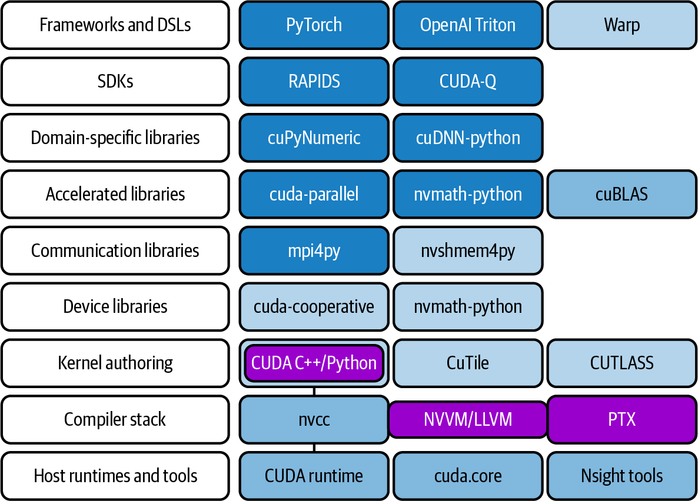
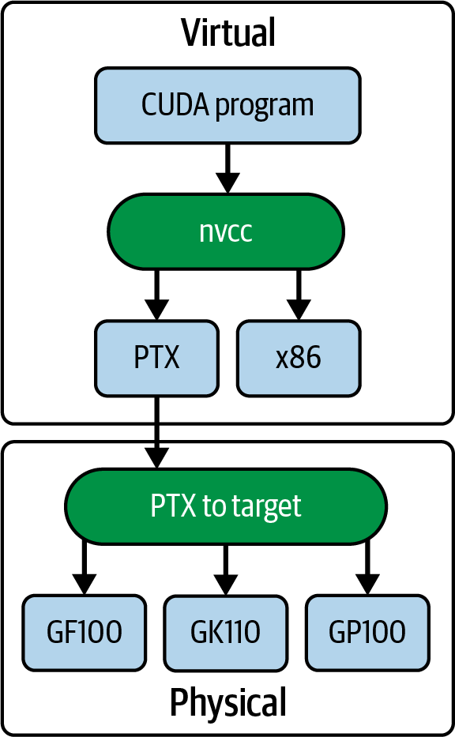
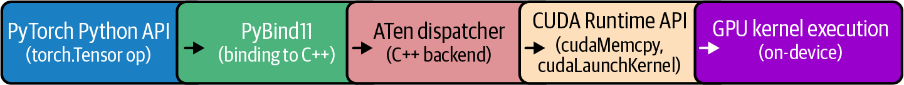
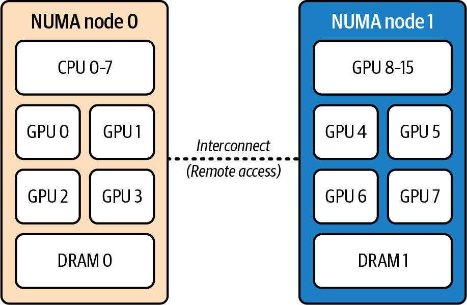
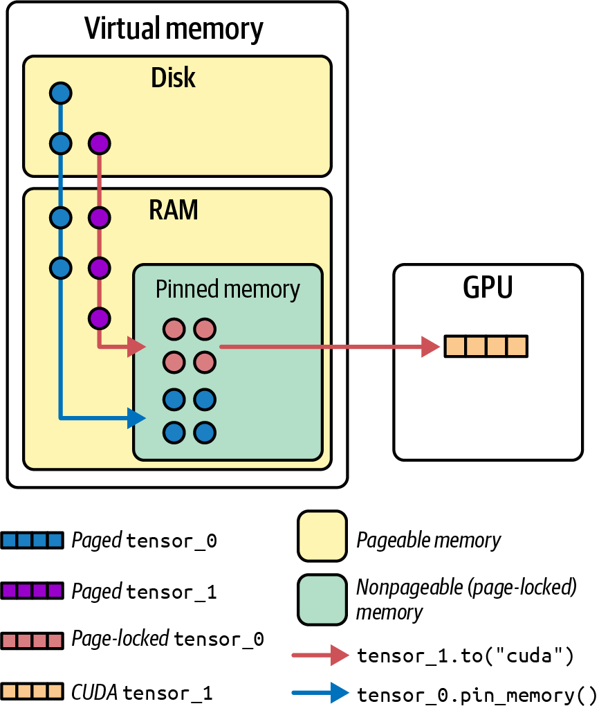
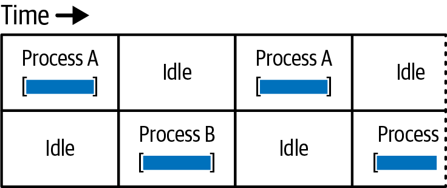
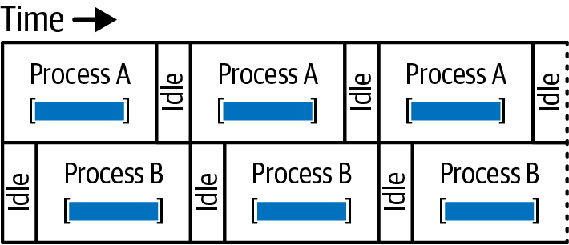
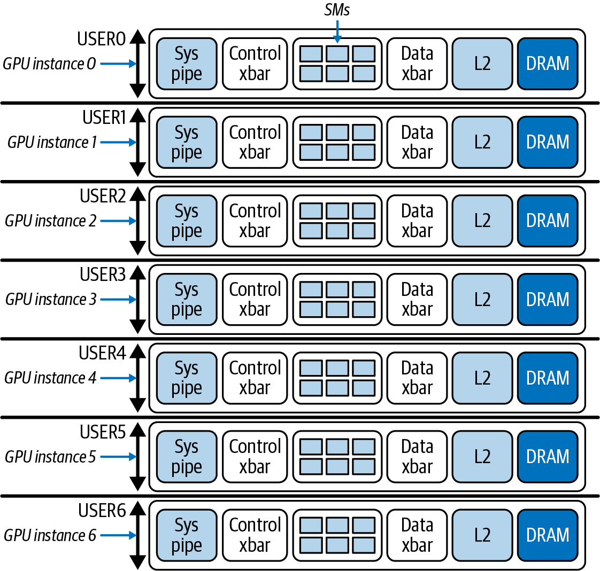

即使 GPU 代码和库已经高度优化，系统级瓶颈仍可能限制大规模 AI 训练的性能。GPU 的有效性能取决于周边环境能否及时供给数据和指令。本章介绍如何调优操作系统与容器运行时，使 GPU 在实际工作负载和系统约束下发挥更高性能。
我们先介绍基础 GPU 软件栈，再讨论 NUMA 亲和性和大页等关键 CPU 与内存优化，使数据能够更高效地从存储经 CPU 流向 GPU。同时还会讨论 GPU 持久化模式、多进程服务（MPS）和多实例 GPU（MIG）等驱动与运行时功能。这些机制用途各不相同：它们可能减少初始化或共享开销、改善资源隔离与并发，但不能单独保证最大 GPU 利用率。
借助 NVIDIA Container Toolkit、NVIDIA Container Runtime、Kubernetes Topology Manager 和 Kubernetes GPU Operator 等组件，可以为 GPU 环境构建较一致的软件栈，并在单节点与多节点环境中支持资源发现、分配和工作负载调度。是否真正提高 GPU 有效利用率，仍取决于拓扑、调度策略、数据路径和应用本身，并应通过端到端测量验证。
在此过程中，你将理解这些优化为何重要。它们的本质是降低延迟、最大化吞吐量，并确保 GPU 始终获得充足数据、以峰值性能运行。结果是一个稳健且可扩展的系统，能够为训练和推理工作负载带来显著性能提升和较高的有效吞吐量（goodput）比例。
操作系统（OS）是所有程序运行的基础。GPU 服务器通常运行 Ubuntu Server LTS 或 Red Hat 等 Linux 发行版，并使用支持最新 GPU 硬件的更新内核。NVIDIA 驱动会安装内核模块，为每块 GPU 创建 /dev/nvidia0、/dev/nvidia1 和 /dev/nvidia2 等设备文件。驱动还会创建用于驱动控制操作的 /dev/nvidiactl、用于统一虚拟内存的 /dev/nvidia-uvm，以及用于模式设置和缓冲区管理的 /dev/nvidia-modeset。
OS 负责 CPU 调度、内存、网络和存储，这些都应针对高 GPU 吞吐量进行调优。因此，应配置 OS，避免干扰 GPU 任务。例如，GPU 节点应禁用交换，或将 vm.swappiness 设置为 0，避免 OS 发起的内存交换干扰 GPU 工作负载。性能工程师的一项职责，就是调整这些 OS 设置，为 GPU 的最大性能做好准备。
面向 GPU 的服务器可能需要运行额外的守护进程或后台进程，例如 NVIDIA Persistence Daemon，即使没有 GPU 作业运行，也能保持 GPU 驱动和硬件上下文处于加载、就绪状态。此外，Fabric Manager 负责管理 GPU 互连拓扑，NVIDIA Data Center GPU Manager（DCGM）则监控 GPU 系统健康指标。
运行多 petaFLOPS GPU 集群，不仅仅是编写 PyTorch、TensorFlow 或 JAX 等高级代码。GPU 操作由完整的软件栈支撑，每一层都可能影响性能。图 3-1 展示了开发和产品化现代 LLM 工作负载时常用的一组框架、库、编译器、运行时和工具，包括 PyTorch、cuDNN、cuBLAS、CUTLASS、CUDA C++、nvcc 以及 CUDA Runtime API（例如 CUDA 工具和驱动等）。
NVIDIA GPU 和 CUDA 生态系统还包含 Python 库，允许使用 OpenAI 的Triton领域特定语言（DSL）、NVIDIA 的Warp框架，以及 NVIDIA 的CUDA Python、cuTile 和CUTLASS库在 Python 中创建 CUDA 内核。

驱动之上是 CUDA Runtime 和库组成的 CUDA Toolkit。工具包包含用于编译 CUDA C++ 内核的 CUDA 编译器 nvcc。编译后，CUDA 程序会链接 CUDA 运行时（cudart）。CUDA 运行时直接与 NVIDIA 驱动通信，以启动工作并在 GPU 上分配内存。
此外，CUDA Toolkit 还提供许多优化库：cuDNN 用于神经网络原语，cuBLAS 用于线性代数，NCCL 用于多 GPU 通信等。因此，必须使用支持 GPU 计算能力（CC）的最新 CUDA Toolkit 版本，因为最新工具包包含针对 GPU 的最新编译器优化和专用库。后续章节将更详细介绍 CUDA 编译器、编程模型以及 CUDA（和 PyTorch）优化。
NVIDIA GPU 编程模型的一个重要特性是跨硬件代际的兼容性。编译 CUDA 代码时，生成的二进制文件既包含虚拟或中间 PTX 代码，也包含物理设备代码（例如 ARM、x86 和 GPU 指令），如图 3-2所示。

nvcc 将 CUDA 程序编译为 PTX，并最终生成目标 GPU 的底层指令这使较新的 GPU 可以即时（JIT）编译 PTX，从而让程序运行在未来架构上；同时，较新的 GPU 也可以执行面向旧架构的旧二进制代码。这种兼容性通过 NVIDIA 的 fatbinary 模型实现：其中包含面向未来的 PTX，以及面向已知架构的 CUBIN（架构专用 CUDA 设备代码二进制文件）。
CUBIN 是 nvcc 使用 -cubin 选项为特定 SM 目标生成的架构专用二进制文件。它包含针对特定 NVIDIA 架构编译出的 GPU 流式汇编（SASS）指令，并被打包进 fatbinary（也称 fatbin），供 CUDA 驱动在运行时加载。PTX 是用于在新架构上通过 JIT 编译实现向前兼容的虚拟 ISA 表示；CUBIN 二进制文件则可在已知 GPU 架构上直接执行。实际应用中，应在 fatbinary 中同时包含 PTX 和相关原生 CUBIN：PTX 提供向前兼容性，CUBIN 则能在已知 SM 目标上快速原生加载。
虽然大多数 CUDA Toolkit 库使用 C++，但 NVIDIA 面向 Python 的当前选项包括 CUDA Python（例如低层驱动和运行时访问）；用于数组编程的 cuPyNumeric、CuTe DSL、cuTile 和 CuPy；以及用于在 Python 中编写 GPU 内核的 NVIDIA Warp。CUTLASS 是 C++ 模板库，供 cuBLAS 等库在底层使用，而不是 Python 库。
虽然 CUDA Toolkit 库大多基于 C++，但 NVIDIA 正推出越来越多以“Cu”开头、构建于 C++ 工具包之上的 Python 库。例如，cuTile 和 cuPyNumeric 是 2025 年初推出的 Python 库，旨在降低 Python 开发者使用 CUDA 为 NVIDIA GPU 构建应用的门槛。
cuTile 是一种 Python 库，旨在通过将大型矩阵拆分为称为 tile 的较小子矩阵，简化 GPU 上的大矩阵处理。它提供基于 tile 的高层抽象，使分块计算、内存访问优化和 GPU 内核调度更加容易。
通过将大型矩阵划分为 tile，cuTile 帮助开发者充分利用 GPU 并行性，而无需手动管理底层细节。对于需要密集矩阵计算的应用，这种方法可以改善缓存利用率并提升整体性能。
cuPyNumeric 旨在为常用 Python numpy 库提供较高兼容度的 GPU 加速替代方案（import cupynumeric as np）。它实现了 NumPy API 的较大子集，使部分应用只需少量修改即可迁移。底层运行时可利用 GPU 并行执行操作，从而加速适合并行化的大规模数值计算、矩阵运算和数据分析；但它并非覆盖 NumPy 的所有语义和工作负载，性能收益也取决于数据规模、操作支持程度及数据移动开销。
通过将工作卸载到 GPU，cuPyNumeric 可加速计算并提高处理海量数据集的应用效率。它旨在降低 Python 开发者使用 GPU 的门槛，无需学习全新接口，因此成为高性能计算中强大的 NumPy 即插即用替代品。
另一个值得关注的 Python 编程模型是开源 Triton 语言与编译器。Triton 是一种 Python DSL，允许开发者用 Python 风格的代码编写自定义 GPU 内核，由编译器生成底层 GPU 代码。它不是 NVIDIA CUDA 库，但可作为 CUDA 生态中的内核开发工具，用于实现和调优高性能算子。
后续章节将介绍 Triton 及其优化；目前只需知道，在许多情况下 Triton 减少了手写 CUDA C++ 的需要。它还集成到 PyTorch 编译器后端中，可自动优化和融合 GPU 操作以提高性能。下面转向 PyTorch。
构建于 CUDA 之上的常用 Python 框架包括 PyTorch、TensorFlow、JAX 和 Keras。这些框架利用 NVIDIA GPU 的能力，为深度学习提供高层接口。本书主要关注 PyTorch 的编译和图优化功能，包括 torch.compile 栈。
PyTorch 编译器栈由 TorchDynamo、AOT Autograd 以及 TorchInductor 或 Accelerated Linear Algebra（XLA）等后端组成，可自动捕获并优化模型。TorchInductor 是常用后端之一，在 NVIDIA GPU 上通常使用 Triton 生成内核。Triton 可进行内核融合，并针对特定 GPU 和系统环境执行自动调优，详见第 14 章。
使用 GPU 对 PyTorch 张量执行操作时，张量看似通过一次 Python 调用就从 CPU 移动到了 GPU。但这次调用实际上会被转换为一系列 CUDA Runtime 调用，并使用各种 CUDA 库，如图 3-3所示。

例如，执行矩阵乘法时，PyTorch 会把相应操作分派给 cuBLAS 等库。cuBLAS 是 CUDA Toolkit 的组成部分，针对 GPU 执行进行了优化。PyTorch 的前向和反向传播最终由底层 CUDA 函数、生成的内核及优化库共同执行；具体路径取决于算子、数据类型、设备和编译模式。
简而言之，PyTorch 隐藏了直接使用 CUDA 编程的许多复杂细节，让开发者用较直观的 Python 接口调用优化后的 CUDA 算子。不过，高层抽象并不保证每个模型都获得最佳性能，仍需分析图中断、内核选择、形状和数据移动。本书将在第 4 章和第 5 章讨论 CUDA 相关优化，并在第 9 章讨论 PyTorch 优化。
所有这些组件——OS、GPU 驱动、CUDA Toolkit、CUDA 库和 PyTorch——必须协同工作，才能创建理想的 GPU 开发环境。研究人员提交训练作业后，调度器预留节点，OS 通过 NVIDIA 驱动提供 GPU 设备和内存分配，容器则提供正确的软件环境（包括经过优化且了解硬件特性的 CUDA 库）。用户代码（例如 PyTorch、TensorFlow、JAX）使用这些 CUDA 库，最终与驱动和硬件通信。
本章介绍的优化旨在让软件栈的每一层都尽可能高效。它们将帮助 GPU 持续执行有用的训练和推理工作，而不是等待 CPU、内存或磁盘 I/O，或等待其他 GPU 完成同步。
经过良好调优的系统可以确保跨数十块 GPU 拆分的模型不会受 I/O 或 OS 开销限制。人们往往更关注模型优化而忽视系统级调优，但系统级优化也能带来可观性能提升。在某些情况下，只需对 OS 配置进行小幅调整，就能获得两位数百分比的性能提升。在大型 AI 项目规模下，这可以节省数万甚至数十万美元的计算时间成本。
GPU 无法达到满利用率的最常见原因之一，是 CPU 没有持续为 GPU 提供有用工作。在典型训练循环中，CPU 负责准备下一批数据，包括从磁盘加载、分词和转换数据等。此外，CPU 还负责分发 GPU 内核，并协调线程和进程。
如果这些主机侧任务速度缓慢，或 OS 调度不当，昂贵的 GPU 就可能处于空闲状态，等待下一项任务或下一批数据。为避免这种情况，需要优化 CPU 和 OS 处理 GPU 工作负载的方式。
这些优化包括设置 CPU 亲和性，避免跨 NUMA 节点流量，让正确的核心处理正确的数据；采用内存分配策略避免 NUMA 惩罚；以及进行 OS 层面的修改，消除不必要的延迟。这样 GPU 就不会因缺少数据而挨饿。其中一项措施是将后台守护进程和 OS 任务隔离到专用核心上，远离为 GPU 提供数据的核心，下面将讨论这一点。
现代服务器 CPU 往往拥有数十个核心，并划分为多个 NUMA 节点。NUMA 节点是由物理位置相近的 CPU、GPU、网络接口控制器（NIC）和内存组成的逻辑分组。了解系统的 NUMA 架构对于性能调优十分重要；访问本地 NUMA 节点内的资源通常比访问其他节点的资源更快。
例如，NUMA 节点 0 上某 CPU 运行的进程若要访问 NUMA 节点 1 上的 GPU，数据就需要经过节点间互连，因而产生更高延迟。在某些平台和访问模式下，跨节点内存访问延迟可能接近本地访问的两倍；具体差异取决于处理器拓扑、互连和负载。
在 GH200 和 GB200 等基于 Grace 的超级芯片中，CPU 与 GPU 通过 NVLink-C2C 连接。Grace 与其配对加速器之间可提供最高约 900 GB/s 的一致性互连带宽。Linux 仍将 CPU DRAM 作为 CPU NUMA 内存、将 GPU HBM 作为设备内存。因此，即使一致性机制降低了软件开销，仍应把 CPU 线程绑定到本地 Grace CPU，并保持数据局部性。这里的 900 GB/s 是特定平台的双向聚合互连带宽口径，并不等同于任意应用都能达到的有效传输吞吐。
在许多双路系统中，远端内存访问延迟可能明显高于本地访问。在一项实验中，本地 NUMA 节点内存访问延迟约为 80 ns，而远端（跨节点）访问约为 139 ns，增幅约 74%。这些数值是特定测试平台和方法下的结果，不应直接视为所有双路系统的固定比例。
把进程绑定到与其 GPU 位于同一 NUMA 节点的 CPU 上，可以减少这类额外开销。例如，可使用 numactl --cpunodebind=<node> --membind=<node>，将 CPU 线程和内存分配约束到 GPU 所在的本地 NUMA 节点。核心原则是让为某块 GPU 服务的 CPU 执行和内存访问尽量保持在本地。
Linux 虽然提供自动 NUMA balancing，但它不一定满足性能敏感型 AI 工作负载对可预测性的要求。调度器可能迁移线程，自动 NUMA balancing 也可能迁移内存页；若线程、内存与 GPU 的位置不匹配，就会产生远端访问延迟。因此，可以根据实测结果，使用 numactl、taskset、cpuset cgroup 等机制显式约束进程和内存位置。
要显式指定 NUMA 亲和性，需要把进程或线程“固定”到与 GPU 同属一个 NUMA 节点的特定 CPU 上。这类 CPU 亲和性设置称为 CPU 绑核。假设一个节点中有 8 块 GPU，其中 4 块连接到 NUMA 节点 0，另外 4 块连接到 NUMA 节点 1。
如果启动 8 个训练进程、每块 GPU 对应一个进程，就应把每个进程绑定到与该 GPU 同属一个 NUMA 节点的 CPU 核心或核心集合。本例中，GPU 0–3 连接到 NUMA 节点 0，GPU 4–7 连接到 NUMA 节点 1，如图 3-4所示。

这样，当 CPU 进程向 GPU 4 供给数据时，应在 NUMA 节点 1 所连接的 CPU 上运行，因为 GPU 4 也连接到 NUMA 节点 1。Linux 提供了相应工具，例如 numactl --cpunodebind=<node> --membind=<node> 可在指定 NUMA 节点的 CPU 与内存策略下启动进程。
也可以用 taskset 把进程绑定到特定 CPU ID。下面使用 numactl，将 train.py 脚本约束在与 GPU 4 同属 NUMA 节点 1 的 CPU 和内存上：
numactl--cpunodebind=1--membind=1\pythontrain.py--gpu4
上例假定已知 NUMA 节点 ID，且脚本只使用一块 GPU。如果要为多块 GPU 自动选择本地 NUMA 节点，处理会更复杂。下面的示例尝试使用 nvidia-smi topo 查询拓扑，再按 GPU 所在的本地 NUMA 节点启动脚本：
#!/bin/bashforGPUin0123;do# Query NUMA node for this GPUNODE=$(nvidia-smitopo-m-i$GPU\|awk'/NUMA Affinity/ {print $NF}')# Launch the training process pinned to that NUMA nodenumactl--cpunodebind=$NODE--membind=$NODE\bash-c"CUDA_VISIBLE_DEVICES=$GPUpython train.py --gpu$GPU"done
这里用 topo -m 查看 CPU 与 NUMA 亲和性，然后从输出中提取单个 NUMA 节点 ID，最后把 --cpunodebind 和 --membind 都设置为该节点，使进程线程和后续内存分配尽量位于 GPU 的本地 NUMA 域。需要注意，nvidia-smi topo 的选项和输出格式随驱动版本、GPU 类型及虚拟化环境而异，上述 shell 解析只是示意；部署前应在目标系统验证，生产工具更适合通过 NVML 或 sysfs 获取结构化拓扑信息。
许多深度学习框架也允许以编程方式设置线程亲和性。例如，PyTorch DataLoader 提供 worker_init_fn，可在每个 worker 进程初始化时设置其 CPU 亲和性，如下所示：
importosimportreimportglobimportsubprocessimportpsutilimportctypesimporttorchimporttorch.distributedasdistfromtorch.nn.parallelimportDistributedDataParallelasDDPfromtorch.utils.dataimportDataLoader,Datasetfromfunctoolsimportpartial# Optional: NVML is preferred for GPU↔NUMA mappingtry:importpynvmlasnvml# pip install nvidia-ml-py3_HAS_NVML=TrueexceptException:_HAS_NVML=False# --- libnuma for memory binding_libnuma=ctypes.CDLL("libnuma.so")if_libnuma.numa_available()<0:raiseRuntimeError("NUMA not available on this system")_libnuma.numa_run_on_node.argtypes=[ctypes.c_int]_libnuma.numa_set_preferred.argtypes=[ctypes.c_int]defparse_physical_cpu_list(phys_str:str):"""Parse '0-3,8-11' -> [0,1,2,3,8,9,10,11]."""cpus=[]ifnotphys_str:returncpusforpartinphys_str.split(','):part=part.strip()ifnotpart:continueif'-'inpart:start,end=map(int,part.split('-'))cpus.extend(range(start,end+1))else:cpus.append(int(part))returncpusdefget_numa_cpus_for_node(node:int):"""Read /sys/devices/system/node/node{node}/cpulist."""path=f"/sys/devices/system/node/node{node}/cpulist"withopen(path,"r")asf:returnparse_physical_cpu_list(f.read().strip())defget_numa_cpus_and_memory():"""Return (current_cpu_mask, preferred_node) from numactl --show."""out=subprocess.run(["numactl","--show"],capture_output=True,text=True).stdoutphys=re.search(r"physcpubind:\s*([\d,\-\s]+)",out).group(1)cpus=parse_physical_cpu_list(phys)node=int(re.search(r"preferred node:\s*(-?\d+)",out).group(1))returncpus,nodedefget_gpu_numa_node(device:int)->int:"""Determine NUMA node for a GPU (prefer NVML; fall back to sysfs;final fallback to current preferred node)."""# NVML path (preferred)if_HAS_NVML:try:nvml.nvmlInit()props=torch.cuda.get_device_properties(device)pci=props.pci_bus_id# '0000:03:00.0' or '00000000:03:00.0'# Normalize to 8-hex-digit domain if needed for NVMLtry:domain,bus,devfn=pci.split(':')iflen(domain)<8:domain=domain.rjust(8,'0')pci8=f"{domain}:{bus}:{devfn}"exceptValueError:pci8=pcitry:handle=nvml.nvmlDeviceGetHandleByPciBusId_v2(pci8)exceptAttributeError:handle=nvml.nvmlDeviceGetHandleByPciBusId(pci8)# Direct NUMA ID if driver exposes ittry:numa_id=nvml.nvmlDeviceGetNUMANodeId(handle)ifisinstance(numa_id,int)andnuma_id>=0:returnnuma_idexceptException:pass# Derive from NVML CPU affinitycpu_count=psutil.cpu_count(logical=True)elems=(cpu_count+63)//64mask=nvml.nvmlDeviceGetCpuAffinity(handle,elems)cpus=[]fori,minenumerate(mask):m=int(m)forbinrange(64):ifm&(1<<b):cpu_id=i*64+bifcpu_id<cpu_count:cpus.append(cpu_id)# Build CPU→NUMA map from sysfs and choose majority nodecpu2node={}fornode_pathinsorted(glob.glob("/sys/devices/system/node/node*")):node_id=int(os.path.basename(node_path).replace("node",""))withopen(os.path.join(node_path,"cpulist"),"r")asf:forcinparse_physical_cpu_list(f.read().strip()):cpu2node[c]=node_idcounts={}forcincpus:n=cpu2node.get(c)ifnisnotNone:counts[n]=counts.get(n,0)+1ifcounts:returnmax(counts.items(),key=lambdakv:kv[1])[0]exceptException:pass# sysfs fallbacktry:props=torch.cuda.get_device_properties(device)pci=props.pci_bus_idsysfs_path=f"/sys/bus/pci/devices/{pci}/numa_node"withopen(sysfs_path,"r")asf:val=int(f.read().strip())returnvalifval>=0else0exceptException:pass# last resort: current preferred node_,node=get_numa_cpus_and_memory()returnnodeifnode>=0else0defset_numa_affinity(node:int):"""Bind current process to CPUs and memory of the given NUMA node."""cpus=get_numa_cpus_for_node(node)# IMPORTANT: CPUs of target nodepsutil.Process(os.getpid()).cpu_affinity(cpus)_libnuma.numa_run_on_node(node)_libnuma.numa_set_preferred(node)(f"PID={os.getpid()}bound to NUMA node{node}(CPUs={cpus})")returncpusdef_worker_init_fn(worker_id:int,node:int,cpus:list):"""Reapply binding in each DataLoader worker (no CUDA calls here)."""psutil.Process(os.getpid()).cpu_affinity(cpus)_libnuma.numa_run_on_node(node)_libnuma.numa_set_preferred(node)(f"Worker{worker_id}(PID={os.getpid()}) bound to NUMA node{node}")# ----- Example usage below -----classMyDataset(Dataset):def__len__(self):return1024def__getitem__(self,idx):returntorch.randn(224*224*3,device='cpu')defmain():# DDP setupdist.init_process_group(backend="nccl",init_method="env://")device=torch.cuda.current_device()# Determine GPU's NUMA node and bind this processgpu_node=get_gpu_numa_node(device)cpus=set_numa_affinity(gpu_node)# Build dataloader with closure-based worker_init_fndataset=MyDataset()init_fn=partial(_worker_init_fn,node=gpu_node,cpus=cpus)dataloader=DataLoader(dataset,batch_size=32,num_workers=4,pin_memory=True,persistent_workers=True,# reduces worker respawn churnworker_init_fn=init_fn,prefetch_factor=2,)# Model and DDPmodel=torch.nn.Linear(224*224*3,10,bias=True).to("cuda")ddp_model=DDP(model,device_ids=[device],static_graph=True)forbatchindataloader:batch=batch.to("cuda",non_blocking=True)out=ddp_model(batch)# ... loss, backward, optimizer ...if__name__=="__main__":main()
该脚本把主训练进程和各个 DataLoader worker 约束到 GPU 的本地 NUMA 节点，以减少跨 NUMA 访问。在 DataLoader 中，通过闭包形式的 worker_init_fn，在每个 worker 内重新应用预先计算的 NUMA 绑定；worker 中不调用任何 CUDA API。
启动时，进程使用 NVML 将当前 GPU 映射到其 NUMA 节点和 CPU 亲和性掩码。若所用 NVML 版本提供相应接口，可直接读取节点；否则可通过 GPU 的 CPU 亲和性掩码（nvmlDeviceGetCpuAffinity）推导。若 NVML 不可用或无法给出节点，则回退到内核 sysfs 条目 /sys/bus/pci/devices/<PCI_ID>/numa_node；最后才采用进程当前允许或首选的节点。不同 NVML 版本及语言绑定暴露的 API 名称并不完全一致，使用前应核对实际接口。
随后，从 /sys/devices/system/node/node<N>/cpulist 读取该节点的 CPU 列表，并使用 psutil 设置 CPU 亲和性。脚本还通过 libnuma（numa_run_on_node 与 numa_set_preferred）影响后续内存分配。严格来说，numa_set_preferred 设置的是“优先”策略，目标节点内存不足时允许回退；若需要强制约束，应使用适当的 bind 策略，并处理分配失败风险。
Linux 的 CPU 亲和性和 NUMA 内存策略通常会由子进程继承，并在 exec 后保留；但框架、启动器、容器配置或 worker 初始化代码可能再次修改这些设置。因此，对框架管理的 worker 显式检查并按需重新应用绑定，可以避免把继承行为当作未经验证的假设。
可评估设置 pin_memory=True，并在 H2D 复制中使用 non_blocking=True，为页锁定主机缓冲区和异步复制创造条件。页锁定操作本身并不保证物理页位于期望的 NUMA 节点，仍应确保首次分配和触页发生在正确策略下。可使用 persistent_workers=True 避免每个 epoch 重建 worker。不要在 worker_init_fn 中调用 torch.cuda.*；可通过闭包或环境变量传入 GPU 索引。
理想情况下，数据准备和批次加载会主要使用本地内存，从而减少 GPU 等待远端 NUMA 访问的时间。不过，这段代码不能保证所有分配都在本地，也不能保证 GPU 始终繁忙；页迁移、共享内存、I/O、框架线程池和容器 cpuset 都会影响结果。应在安装了 libnuma 和 numactl 的目标 Linux 系统上检查实际亲和性，并通过性能计数器和端到端基准验证收益。
默认情况下，numactl 为目标进程设置 CPU 亲和性和 NUMA 内存策略；这些属性通常由 fork 创建的子进程继承，并跨 exec 保留。Python 的 spawn 会启动新解释器，但操作系统层面的亲和性与内存策略通常仍来自其父进程。实际风险主要是框架、运行时或管理员配置随后覆盖策略，因此使用框架管理的 worker 时，应在 worker 内验证有效 CPU 集合和 NUMA 策略，必要时再显式设置。
在 Grace Blackwell（以及后续同类平台）这样的超级芯片架构中，CPU 与 GPU 通过 NVLink-C2C 提供一致性访问。不过，Linux 和 CUDA 软件栈仍区分 CPU DRAM 与 GPU HBM 等不同内存池；把 CPU 线程放在本地 CPU NUMA 节点上通常仍有助于保持局部性。
绑核可以减少由线程跨 NUMA 节点迁移引起的调度变化。例如，可避免 GPU 数据加载线程在训练或推理过程中被迁移到远端节点的核心。消除跨 NUMA 流量和不必要的核心迁移有时能改善训练吞吐并降低性能抖动，但原文所称 5%–10% 并非通用结果；收益取决于瓶颈位置、拓扑和负载，应通过 A/B 基准测量。
许多高性能 AI 系统会评估 CPU 同时多线程（SMT，Intel 平台常称为超线程）；有时为获得更可预测的单核性能而禁用 SMT，但效果取决于工作负载。系统也可为操作系统后台任务预留少量核心，例如结合 isolcpus、cpuset、IRQ 亲和性和服务管理配置。Kubernetes 可通过 CPU Manager 的 static policy、reserved CPUs 等节点级设置隔离系统守护进程与工作负载 CPU。单独设置 isolcpus 并不能保证其余核心只执行训练或推理线程，仍需处理内核线程、中断及共享资源。
对于 NVIDIA Grace Blackwell 这类集成式 CPU-GPU 超级芯片，NVLink-C2C 提供一致的共享虚拟地址访问，而 CPU DRAM 与 GPU HBM 仍是不同的物理内存池。与传统 PCIe 分离式系统相比，这可降低一部分 CPU-GPU 数据移动的软件与互连开销，但不会自动消除所有 NUMA、放置或带宽瓶颈。
NVIDIA 通过 Grace Blackwell 等超级芯片把 CPU 与 GPU 紧密连接，以缓解 CPU-GPU 通路瓶颈。NVLink-C2C 为两个处理器提供一致性内存访问，特定平台标称双向聚合带宽最高约 900 GB/s，从而减少部分显式数据搬运和同步开销；但这并不意味着 CPU DRAM 与 GPU HBM 合并为单一等速内存，也不代表应用可持续获得该峰值带宽。此类软硬件协同设计预计仍会是系统优化的重要方向。
即便采用紧耦合 CPU-GPU 超级芯片，仍需正确配置硬件和软件，并通过测量优化整个技术栈。目标是减少不必要的数据处理延迟，使 GPU 在实际瓶颈允许的范围内保持较高有效利用率。后续小节将讨论大页、预取和锁页内存；这些选项都应按工作负载验证，而不应默认全部启用。
默认情况下，Linux 通常采用 first-touch 策略：物理页在首次触及时从执行该触页操作的 CPU 所在 NUMA 节点分配。因此，把进程固定到 NUMA 节点 0，并在该节点上首次触页，通常会使内存来自节点 0 的本地 RAM。但若调度器迁移线程，或内存在绑核前已由其他节点触页，节点 0 上运行的进程仍可能访问节点 1 的内存，从而削弱 CPU 绑核带来的局部性收益。
为避免这种情况，可使用 numactl --membind，将内存分配约束到指定 NUMA 节点；程序也可通过 NUMA API 设置策略。一般原则是让内存靠近使用它的 CPU，并让该 CPU 靠近目标 GPU，使内存、CPU 与 GPU 的数据路径尽量保持在同一 NUMA 域。下面沿用前例，通过 --membind=1 强制从 NUMA 节点 1 分配；如果该节点内存不足，严格绑定可能导致分配失败，而不是自动回退：
numactl--cpunodebind=1--membind=1pythontrain.py--gpu5&
通过 numactl 启动进程时，CPU 约束（--cpunodebind）和内存策略（--membind）会应用于目标进程。Linux 通常让子进程继承这些属性，而且 NUMA 内存策略通常跨 exec 保留；原文声称只有 fork 子进程继承、spawn 或 exec 不继承，并不准确。框架或容器运行时仍可能主动覆盖设置，因此应在实际 worker 中验证有效策略。
此外，锁页内存（page-locked memory，也称 pinned memory）不会被换出，其物理页可在 DMA 操作期间保持稳定。CUDA 可直接从已注册的锁页主机缓冲区发起 DMA；对于普通 pageable 内存，运行时通常需要先复制到内部锁页 staging 缓冲区。锁页内存因而可能提高 H2D/D2H 带宽并便于异步重叠，但原文所称“快 2–3 倍”不是通用保证，实际收益取决于传输大小、互连、并发和系统内存压力。
可以使用 CUDA Samples 中的 bandwidthTest比较 pageable 与 pinned 主机内存的 CPU-GPU 传输带宽。具体命令行选项取决于所安装 CUDA Samples 的版本；应先运行 bandwidthTest --help，不能假定所有版本都支持原文给出的 --memory=<pinned or pageable> 语法。
NVIDIA GPUDirect RDMA 可在受支持的 GPU、NIC、PCIe 拓扑、内核模块和驱动配置下，使 InfiniBand/RDMA NIC 与 GPU 内存直接交换数据。类似地，GPUDirect Storage（GDS）可让兼容存储路径在 GPU 内存与存储之间进行直接 DMA，减少经由 CPU bounce buffer 的数据复制。两者仍需要 CPU 提交和管理 I/O，也可能有控制路径开销，因此“没有额外 CPU 开销”并不准确。
深度学习框架通常允许数据加载器使用锁页内存。例如，PyTorch DataLoader 的 pin_memory=True 会让返回批次经过锁页内存处理，如图 3-5所示。具体由哪个线程执行 pinning、内存落在哪个 NUMA 节点，会受到 PyTorch 版本、worker 模式和首次触页位置影响。

锁页内存可能加快 tensor.to(device)，主要因为页锁定主机内存支持直接 DMA，并为主机到设备复制与 GPU 工作重叠创造条件。pageable 内存通常需要额外 staging 或同步，从而减少可重叠空间。要真正异步重叠，还需要合适的 CUDA stream、non_blocking=True、独立 copy engine 以及不存在阻塞依赖。
实践中，pin_memory=True 经常能改善吞吐，但收益取决于工作负载、批大小、传输粒度和主机内存行为。当 H2D 复制位于关键路径时，锁页内存通常更有价值；锁页过多也会减少操作系统可分页内存并增加系统压力。
总之，应根据基准测试决定数据加载器是否使用锁页内存，例如 PyTorch DataLoader 的 pin_memory=True。GPUDirect RDMA 和 GDS 只应在硬件、驱动、文件系统或网络路径均受支持且验证通过时启用；这些技术可能降低数据路径开销，但不会在所有负载中必然降低延迟。
操作系统会限制进程可以锁定的内存量。shell 中可用 ulimit -l 查看或设置 RLIMIT_MEMLOCK；数值单位和硬上限取决于 shell 与系统配置。在容器环境中，可配置 Docker --ulimit memlock 或相应运行时设置，但容器内的 capability、宿主机硬限制和 cgroup/运行时策略仍可能约束锁页能力。
除了锁定内存并将其绑定到 NUMA 节点之外，我们还应讨论透明大页（THP）。Linux 内存管理通常使用 4 KB 页面；但当进程使用数十乃至数百 GB 内存时（例如容纳深度学习数据集、预取批次和模型参数等），管理数百万个小页面的效率很低。
大页（2 MB 甚至 1 GB 的页面）通过增大内存块来降低虚拟内存管理开销。其主要优势是减少缺页异常，并减轻地址转换后备缓冲器（translation lookaside buffer，TLB）的压力。
TLB 是 CPU 用来缓存虚拟地址到物理地址映射关系的高速缓存。页面数量更少、尺寸更大，意味着相同数量的 TLB 表项可以覆盖更多内存，从而减少 TLB 未命中。
大页通常带来的收益不算很高，吞吐量提升往往约为 3%–5%。这是通过降低缺页异常开销和 TLB 压力实现的。在大多数系统上，启用 THP 是一种简单有效的优化，因为内核会自动使用 2 MB 页面为大型内存分配提供后备存储。在内存池非常大的场景中（例如为 I/O 预分配锁页缓冲区），还可以使用 vm.nr_hugepages 或 hugetlbfs 显式配置大页，以获得更加确定的性能。
请记住，使用大块锁页内存区域时，应将 ulimit -l（最大锁定内存）设置为较高的值或 unlimited。如果此限制过低，锁定内存可能会失败，导致退回到可交换内存，或者发生内存不足（OOM）错误。
需要特别注意，THP 的后台内存规整可能引入不可预测的停顿，这对延迟敏感的 LLM 推理工作负载可能造成严重影响。Linux 默认配置为尽可能通过 THP 自动分配 2 MB 页面。这通常已经足够，但仍值得针对具体工作负载进行测试。
可以禁用 THP，但之后需要手动分配和控制大页。这会增加复杂度，却可能是推理等低延迟工作负载所必需的。禁用 THP 后，系统可以避免由内核执行内存规整所造成的停顿。
目前普遍的做法是：对于大多数重视吞吐量、基于 GPU 的训练工作负载，启用 THP；对于推理等重视延迟的工作负载，则完全禁用 THP（transparent_hugepage=never），或使用 madvise。当多个 rank（GPU）同时分配内存时，分布式训练工作负载也需要考虑这一取舍。
除 CPU/内存绑定和大页之外，还有一些值得说明的操作系统级调优措施，包括线程调度、虚拟内存管理、文件系统缓存和 CPU 频率设置。接下来几节将逐一介绍。
在繁忙的系统上，应确保数据流水线线程等重要线程不会频繁受到中断。Linux 默认使用完全公平调度器（Completely Fair Scheduler，CFS），它适用于大多数场景。
但是，如果某个负责向 GPU 提供数据的线程对延迟极为敏感，可以考虑为该线程使用实时先进先出（FIFO）或轮转（RR）优先级调度。这样可以确保高优先级线程运行时不会被普通优先级线程抢占。
不过，使用这种方式需要谨慎，因为实时线程若管理不当，可能使其他进程得不到运行机会。实际使用中，如果已经将线程绑定到专用核心，通常不必调整实时线程优先级，但仍应留意这一选项。
另一种选择是隔离核心或创建独立的 CPU 分区，从而进一步减少这些专用计算资源受到的干扰。可以使用 cset、isolcpus 和 nohz_full 等内核参数，或者使用 cgroup 的 cpuset 隔离。完成隔离后，操作系统调度器会将这些 CPU 核心留给指定的工作负载使用。
在生产环境中，强烈建议使用 cgroup 配置 CPU 和内存亲和性。这样可以将每个 AI 工作负载隔离到各自的物理核心和内存区域，防止不同工作负载之间发生资源争用，并避免 NUMA 访问惩罚。应使用 cpuset cgroup 或容器运行时选项（docker --cpuset-cpus）强制实施这种隔离。
可以将每个设备的硬件中断分配给同一 NUMA 节点上的核心。这样可以避免跨节点处理中断，否则不仅会增加延迟，还会逐出远端节点中有用的缓存行。例如，当 NUMA 节点 0 上的 GPU 或 NIC 触发中断时，可将其中断绑定到节点 0 上的某个核心，避免由其他节点处理。如果不进行这种绑定，另一个 NUMA 节点上的 CPU 可能会处理中断，从而引发缓存一致性流量和跨节点通信。
实际使用中，对性能敏感的系统通常会禁用默认的 irqbalance 守护进程，或通过定制规则运行它。另一种方法是使用 /proc/irq/*/smp_affinity 手动设置每个中断的亲和性掩码。将每个 GPU 和 NIC 中断绑定到距离最近的核心，可确保这些设备中断始终由最合适的 NUMA 节点处理。
简而言之，结合使用专用核心、适当的调度优先级以及 NUMA 感知的硬件中断绑定，有助于最大限度地降低向 GPU 提供数据的数据加载线程所产生的抖动。
不言而喻，应始终尽量避免内存交换。如果进程的部分内存被换出到磁盘，性能可能下降若干个数量级，后果十分严重。GPU 程序往往会分配大量主机内存来缓存数据。如果操作系统将部分数据从内存换出到磁盘，那么 GPU 后续需要访问这些数据时将遭遇很长的延迟。
建议设置 vm.swappiness=0，它会使 Linux 尽可能延后主动换出匿名页，但并不会禁用交换。还应为训练作业显式配置 cgroup 内存及 swap 限制；仅设置 swappiness 或创建 cgroup，都不能保证完全不发生交换。
应通过 Docker 或 Kubernetes 使用 cgroup v2，并显式配置 cpuset CPU/NUMA 节点及 swap 限制。正确配置这些控制项后，才能在容器化环境中实施 NUMA 亲和性和禁止交换策略。
还可以使用 sudo swapoff -a 禁用当前所有交换设备和交换文件；若未修改持久化配置，重启后它们可能再次启用。务必确保工作负载拥有足够的 RAM，或设置资源限制以避免过量承诺；否则，OOM killer 可能终止进程。可使用 vmstat 或 free -m 监控交换空间使用情况，确认其保持为零。
另一个相关设置是前文在锁页内存部分提到的 ulimit -l。它规定进程可以锁定、因而不会被换出的内存上限；调高此限制只是允许应用锁定更多内存，并不会自动锁定普通内存。对于使用大量锁页内存的 AI 工作负载，通常会将此限制设置为较高值或 unlimited，同时结合应用的锁页行为和 cgroup swap 策略。
大型训练作业的一项最佳实践是频繁将检查点写入磁盘，以便作业失败后从已知完好的检查点重新启动。不过，保存检查点时突发写入的大量数据可能占用大量操作系统页缓存，并引发停顿。
在存储方面，可以调整 vm.dirty_ratio 和 vm.dirty_background_ratio，改变脏页开始后台回写以及写入进程自身受到节流的阈值；它们并不直接设置页缓存总大小。例如，对于数 GB 的检查点，提高脏页阈值可让操作系统在回写磁盘之前先在 RAM 中聚合更多数据，从而吸收写入突发。但阈值过高也可能积累更多脏页，造成更长的集中回写停顿，因此应根据内存容量、存储带宽和实测延迟进行调优。
另一种选择是在独立线程中保存检查点。PyTorch 较新的方案支持由集群中的各个节点分别写入分布式检查点分片；作业失败并重新启动后，加载检查点时会组合这些分片。
对于延迟敏感的训练工作流，可以考虑绕过页缓存。例如，可使用 O_DIRECT 打开检查点文件；也可使用 Linux 的 io_uring 实现异步 I/O，但只有配合 direct-I/O 选项时才会绕过页缓存。写完检查点并确保脏页已完成回写后，可调用 posix_fadvise(fd, 0, 0, POSIX_FADV_DONTNEED)，提示内核回收相应缓存页，以减轻后续迭代的内存压力；该调用只是建议，并不保证页面立即被丢弃。
许多计算节点默认会让 CPU 采用节能模式，在空闲时降低频率或进入睡眠状态。这有助于节省能源、减少发热并降低成本。在模型训练期间，当 GPU 处理数据集的最后几批数据时，CPU 不一定始终处于满负载。不过，新任务到来、系统恢复 CPU 活跃状态时，这些电源管理功能可能增加额外延迟。
为了获得较高且较稳定的性能，AI 系统常将 CPU 频率 governor 配置为“performance”模式。该模式倾向于请求策略范围内的最高性能，但实际频率仍可能受硬件调频、睿频、功耗和温度限制影响，并非始终固定在最大频率。可以使用 cpupower frequency-set -g performance 配置，也可以通过基本输入/输出系统（BIOS）设置。
同样，限制或禁用深层 C-state 可以防止核心进入唤醒延迟较高的低功耗空闲状态。CPU C-state 是系统 ACPI 规范定义的处理器电源状态：C0 表示处理器正在执行指令，C1 及后续状态表示不同深度的空闲状态。通常状态越深，节能越多，但新任务到来时唤醒所需时间也可能越长。限制深层 C-state 有助于减少过高的延迟尖峰。
实际使用中，许多服务器 BIOS/UEFI（统一可扩展固件接口）提供高性能配置文件，可设置偏重性能的 CPU 电源策略，并限制深层 C-state；具体行为因平台和固件而异。
本质上，这是以增加一部分功耗来换取响应更快的 CPU 行为。在 GPU 是主要耗电设备的训练场景中，如果增加少量 CPU 功耗能够持续为 GPU 供给数据，通常是可以接受的。例如，当数据加载器线程在等待数据期间休眠、CPU 进入较深的 C6 状态时，处理器的很大一部分会断电，以最大限度节能。
CPU 进入较深的睡眠状态后，唤醒可能需要数微秒。单次时间虽短，累积起来却可能在管理不当时造成 GPU 气泡。所谓气泡，是指 GPU 等待 CPU 恢复数据处理的空闲时段。让 CPU 保持随时可用，有助于减少此类停顿。许多服务器 BIOS 都提供禁用 C-state 或限制其最大深度的设置。
对于延迟敏感且经测量确认受这些因素影响的系统，应减少会引入不可预测延迟的机制，例如过多的上下文切换、频率状态转换和内存换出。目标是让 CPU 以 GPU 所能消费的速度持续供给数据，避免操作系统将关键任务调度到不合适的核心，或在不恰当的时机占用 CPU 周期。是否禁用节能功能应依据延迟、吞吐量、功耗和散热的实测权衡决定。
在调优良好的 GPU 服务器上，由于大部分计算由 GPU 承担，CPU 利用率未必很高。不过，CPU 活动应当保持稳定，并与 GPU 活动协调一致：GPU 处理当前批次时，CPU 需要持续准备下一批输入。
CPU 到 GPU 的顺畅交接对于维持较高的 GPU 利用率至关重要。调优主机内存分配器（jemalloc 或 tcmalloc）可以减少由内存分配和回收引起的数据准备停顿，但无法消除所有不可预测的延迟。实际收益取决于应用的分配模式以及其他 CPU、I/O 和同步瓶颈。
调优后，应通过性能分析确认 GPU 因 CPU 端延迟而等待数据的时间有所下降，而不能仅以利用率接近 100% 作为保证。使用 jemalloc 时，可以通过 narenas 调整 arena 数量，以降低多线程分配时的锁争用；这与 jemalloc 的 per-CPU arena 模式并非同一设置。还可启用 background_thread，在后台执行页面回收，并延长 dirty_decay_ms/muzzy_decay_ms，避免过快地回收已释放页面。这些设置可能降低回收开销，却也可能增加常驻内存，且 arena 过多会加剧内存占用和碎片，因此必须测量后取舍。
可以通过 MALLOC_CONF 环境变量调优 jemalloc。以下配置仅是示例起点：
exportMALLOC_CONF="narenas:8,dirty_decay_ms:10000,muzzy_decay_ms:10000,background_thread:true"
类似地，可以调节 tcmalloc 的 TCMALLOC_MAX_TOTAL_THREAD_CACHE_BYTES 和 TCMALLOC_RELEASE_RATE 环境变量。增大线程缓存容量可能让更多小型分配避开中央分配路径和系统调用，但也会增加内存占用；释放速率的具体含义和可用性还取决于所使用的 TCMalloc 实现与版本。可以从以下配置开始测试：
exportTCMALLOC_MAX_TOTAL_THREAD_CACHE_BYTES=$((512*1024*1024))exportTCMALLOC_RELEASE_RATE=16
简而言之，优化内存分配器可以降低分配开销，并在合适的配置下改善碎片问题，从而减少 CPU 向 GPU 供给数据时的一类停顿。应针对具体工作负载和运行环境测试这些环境变量，同时监控吞吐量、尾延迟、常驻内存和碎片情况。
我们已经完成了 CPU 端的优化，但 GPU 驱动和运行时中也有一些会影响性能的重要设置，尤其是在多 GPU 和多用户场景中。NVIDIA GPU 提供了若干调节选项，合理配置后可以降低开销，并改善多个工作负载共享 GPU 的方式。
接下来将介绍 GPU 持久化模式、MPS、MIG 分区，以及时钟设置、ECC 内存和内存不足行为等其他注意事项。
默认情况下，当没有应用程序使用某块 GPU 时，驱动可能释放与该 GPU 相关的状态，硬件也可进入较低功耗状态。下一个应用程序使用 GPU 时，需要重新初始化相应状态。根据平台和配置，这项初始化可能带来明显的启动延迟，有时可达到秒级。
对于周期性释放并重新获取 GPU 的工作负载，GPU 初始化开销会影响性能。例如，训练集群中的作业可能频繁启动和停止；低流量推理集群也可能在新请求到来时重新初始化 GPU。在这些场景中，冷启动开销会降低整体工作负载性能。
可以运行 nvidia-persistenced 守护进程来启用持久化模式。它会在没有活跃应用程序时保留 GPU 的驱动状态，避免最后一个客户端退出后完全销毁这些状态。持久化模式可以减少下一个作业的初始化延迟，但并不保证 GPU 保持完全唤醒、禁止所有电源门控或实现零启动延迟。它通常适合频繁启动作业或对冷启动延迟敏感的环境。可使用以下命令配置持久化守护进程在开机时启用；若要立即启动，还需另行执行启动操作：
systemctlenablenvidia-persistenced
在 Kubernetes 环境中，可以配置 NVIDIA GPU Operator，自动为各 GPU 管理持久化模式。
AI 集群通常会在服务器启动时为 GPU 启用持久化模式。这样可以提前保留驱动状态，在作业开始时减少初始化工作。它不会加速实际的数学运算，但可以缩短作业启动时间，并降低一部分冷启动延迟。
GPU 持久化模式也有助于交互式使用。未启用持久化时，系统空闲一段时间后的第一次 CUDA 调用可能因重新初始化 GPU 状态而停顿；启用后通常可以减少这部分延迟，但具体效果取决于驱动、GPU 和系统电源管理状态。
持久化模式可能使 GPU 在空闲时保留更多状态，并带来一定的资源或功耗开销；具体功耗影响依平台而异。对许多数据中心场景而言，这可以换取更一致的启动性能。GPU 持久化模式通常由具有 sudo 权限的管理员统一配置。
通常，当多个进程共享一块 GPU 时，GPU 调度器会在这些进程之间进行时间复用。例如，两个 Python 进程都要在同一块 GPU 上运行内核时，GPU 可能先执行一个进程的内核，再执行另一个进程的内核，如此交替。如果这些内核很短、两次提交之间又存在空闲间隙，那么上下文切换和无法重叠执行可能导致 GPU 利用不足。
NVIDIA 多进程服务（Multi-Process Service，MPS）允许多个进程更高效地并发使用 GPU。资源允许时，MPS 客户端提交的内核可以并发执行，从而减少独立 CUDA 上下文之间切换及串行调度所造成的开销。MPS 服务器为客户端协调共享连接和执行资源，但不能简单理解为把所有客户端的 CUDA 上下文或虚拟地址空间合并成一个。
MPS 何时有用？模型训练通常采用每块 GPU 一个进程，此时未必需要 MPS。若在一块大型 GPU 上运行多个无法单独占满设备的推理作业，MPS 则可能提高资源利用率。例如，假设一块 40 GB GPU 上运行四个独立推理作业，每个占用 5–10 GB 显存，单独运行时仅利用约 30% 的计算能力。如果这些作业主要按时间片串行运行，设备将留下大量空闲执行资源。这里的比例只是示例，实际调度还取决于 CUDA 上下文、内核并发条件和驱动行为。
为这些推理作业启用 MPS 后，一个作业受延迟或资源依赖阻塞时，另一个作业的内核可能利用剩余执行资源，从而提高总体利用率。例如，两个单独运行时各使用约 40% GPU 资源的进程，在资源需求互补的情况下，合并利用率可能达到 80%–90%；这不是 MPS 的性能保证。
类似地，两个单独执行各需一小时的训练进程，可以尝试通过 MPS 在同一块 GPU 上并发运行。当并发客户端的内核和内存带宽需求互补、且彼此争用较少时，总完成时间可能接近一小时多一点，而不是串行的两小时；若资源争用严重，则不会获得这种近 2 倍的收益。为便于理解，假设进程 A 和进程 B 在未启用 MPS 时周期性启动内核，GPU 可能按 A-B-A-B 的方式调度，并在二者等待期间出现间隙，如图 3-6 所示。

启用 MPS 后，调度可以重叠 A 与 B：当 A 未使用 GPU 的部分执行资源时，B 的工作可以同时利用这些资源，反之亦然。这种重叠有机会减少空闲间隙，如图 3-7 所示。

配置 MPS 需要运行 MPS 控制守护进程（nvidia-cuda-mps-control），由它按需启动 MPS 服务器进程来协调 GPU 访问。在较新的 GPU 架构上，MPS 客户端可通过更直接的提交路径与硬件交互，从而减少服务器进程参与关键执行路径的开销。
通常会在节点上启动 MPS 控制服务，并按 GPU、用户或调度策略管理相应服务器；随后设置 MPS 所需的环境变量，再启动 GPU 作业。连接到同一 MPS 环境的作业便可以并发共享 GPU。
MPS 还可以为客户端设置 active thread percentage，用于限制该客户端可用的并发执行资源上限。它控制可供客户端使用的线程/SM 资源比例，但不是专用 SM 的硬分区，也不能单独保证 QoS。例如，可以设置 CUDA_MPS_ACTIVE_THREAD_PERCENTAGE=50，将客户端可用执行资源上限限制在约 50%；若未设置，各作业将竞争可用的 GPU 资源。
需要注意，MPS 不像 MIG 那样硬性划分 GPU 显存容量。各客户端拥有独立的 GPU 虚拟地址空间，但共享同一物理显存池和其他设备资源。某个进程的大量显存分配或严重 GPU 故障可能影响同一 MPS 环境中的其他客户端，具体故障传播行为取决于 GPU 架构和错误类型。此外，如果一个程序已经独占并饱和 GPU，MPS 不会使它变得更快；只有单个作业留有其他作业可填补的执行空隙时，MPS 才可能带来收益。
MPS 的另一个限制与多用户部署有关。传统的 MPS 部署通常要求连接同一服务器的客户端使用同一 Unix 用户；多用户集群因此常由调度器协调，使同一时间只有一个用户的作业通过 MPS 共享 GPU。系统级共享部署必须仔细评估权限、监控、故障传播和资源隔离风险。
较新的 NVIDIA 驱动和受支持的架构提供多用户 MPS，允许不同 Unix 用户的进程连接 MPS 服务。这提高了易用性，但不提供 MIG 式的显存容量、带宽或故障硬隔离；需要强隔离时应优先考虑 MIG。Kubernetes GPU time-slicing 是另一种共享方式：设备插件可以将一块 GPU以多个逻辑副本暴露给不同 Pod。例如，将复制因子设为 4 后，调度器可以把四个 Pod 放到同一块 GPU 上，由底层驱动对其 CUDA 上下文进行时间复用。
Kubernetes time-slicing 不需要 MPS，也不会提供 MPS 的跨进程并发执行协调。它主要增加可被调度到同一设备的工作负载数量，并不保证更快切换，也不提供显存或故障隔离。它可用于允许一定性能波动的交互式或低利用率工作负载；高吞吐场景是否更适合 MPS，强隔离场景是否更适合 MIG，都应通过实际工作负载测试决定，下一节将继续讨论 MIG。
支持 MIG（Multi-Instance GPU，多实例 GPU）的现代 NVIDIA GPU 可以在硬件层划分为多个 GPU 实例。MIG 属于硬件辅助的资源分区机制，可以提供可预测的专用资源和较强隔离，但会牺牲动态共享资源的灵活性。其性能开销取决于工作负载、profile 和资源利用情况，不能统一概括为固定的几个百分点。
由于资源是硬划分的，一个实例空闲时通常不能把自己的分区资源借给另一个实例。部分支持 MIG 的 GPU 最多可划分为七个较小的逻辑 GPU；每个实例拥有专用的显存分区和计算资源（包括一定数量的 SM），如图 3-8 所示。可用实例数量与 profile 组合取决于具体 GPU 型号。

按照 NVIDIA 的 MIG profile 命名约定，前缀 <X>g 表示分配给实例的 GPU slice 数量。例如，在采用七个 GPU slice 的架构上，1g、2g 和 7g 分别表示一、二和七个 slice。slice 是硬件定义的分区单位，不能仅用 GPU 公布的总 SM 数除以 7 来推导某个 profile 的实际可用 SM 数；应以对应 GPU 型号的官方 profile 表为准。
因此，原文以 132 个 SM 直接计算出每个 1g 约含 19 个 SM，只能作为粗略算术示意，并不适用于所有 MIG GPU，也不适用于紧接着列出的 B200 profile。实际 profile 会按硬件 GPC/SM 分组进行分区，并可能保留一部分资源。
后缀 <Y>gb 则表示该 profile 保留的 HBM 显存容量。MIG profile 的具体取值由 GPU 代际和型号决定，可查阅 NVIDIA 文档。Blackwell B200 的部分 MIG profile 如表 3-1 所示。
| Profile 名称 | 显存比例 | SM 比例 | L2 缓存比例 | 复制引擎数 | 实例数量 |
|---|---|---|---|---|---|
| MIG 1g.23gb | 1/8 | 1/7 | 1/8 | 2 | 7 |
| MIG 1g.45gb | 2/8 | 1/7 | 2/8 | 2 | 4 |
| MIG 2g.45gb | 2/8 | 2/7 | 2/8 | 3 | 3 |
| MIG 3g.90gb | 4/8 | 3/7 | 4/8 | 6 | 2 |
| MIG 4g.90gb | 4/8 | 4/7 | 4/8 | 8 | 1 |
| MIG 7g.180gb | 全部 | 全部 | 全部 | 16 | 1 |
该表还列出了每种 profile 的显存、SM、L2 缓存比例、复制引擎数量和可创建实例数。这些固定 profile 与 GPU 的底层分区拓扑相匹配，显存 slice 对应特定的 HBM 资源。
这种两段式名称分别表达计算资源规模（GPU slice 数量）和显存容量（GB）。管理员可以选择硬件支持的 MIG profile 组合；由于底层放置和分区约束，已分配资源之和不一定恰好填满整块 GPU，也不能任意创建新的 slice 大小。
管理员只能在每块 GPU 上启用受支持的 MIG profile，例如 1g.23gb、2g.45gb 和 4g.90gb。可以使用 nvidia-smi -mig 管理 MIG 模式，或通过 NVIDIA Kubernetes GPU Operator 的 nvidia.com/mig.config 配置。重新配置前通常需要清空节点上的工作负载，再按平台支持的流程应用实例配置。
GPU 进入 MIG 模式后，可以在不重启整个系统的情况下创建和销毁 GPU instance 与 compute instance；具体操作是否需要 GPU reset 取决于 GPU 代际、驱动和当前状态。启用或禁用 MIG 模式在部分平台上需要 GPU reset，而 Ampere 之后某些 GPU 的行为有所不同，因此应遵循对应版本的 NVIDIA MIG User Guide，并在重新配置前清空工作负载。
从软件视角看，每个 MIG 设备近似一块独立 GPU，拥有专用显存容量、SM、L2 cache slice 和相关引擎资源。MIG 的优势是为作业提供硬件级资源隔离和更可预测的服务质量。例如，可以把只需要较小显存和计算配额的多个独立服务部署到同一块物理 GPU；它们对显存容量和计算资源的直接争用会受到分区边界限制。不过，主机接口和部分系统资源仍可能共享，因此不应理解为绝对无干扰。
作业可以明确请求 MIG 设备，但调度时需要尽量填满可用实例。例如，在七个 1g 实例的配置中，如果一个作业只占用一个实例，应将其他合适的作业安排到剩余实例，否则会留下大量闲置资源。集群可以让部分节点使用 MIG 承载小型推理作业，另一些节点则关闭 MIG，供大型训练作业使用完整 GPU。
MIG 通常在系统或节点层面配置：管理员启用 MIG 模式，并创建所需的 GPU instance 和 compute instance。完成后，这些 MIG 设备会以各自的设备标识符呈现给 CUDA 和管理工具。启用模式、实例创建和 reset 的准确顺序因 GPU 架构与驱动版本而异。
如果 profile 规划与作业需求不匹配，未使用的实例或无法组合利用的剩余 slice 会造成碎片和资源浪费。因此应根据工作负载预先规划分区大小，并在需求变化时重新配置。调整实例本身不一定总要 reset GPU，但必须先处理仍在使用相关设备的工作负载，并遵循平台要求。
对于跨多块 GPU 的大型模型训练和推理服务，MIG 往往并非首选，因为这些工作负载通常需要完整设备资源和高速 GPU 间通信。相反，对于能够在较小 GPU 分区中运行的多租户小模型推理，MIG 的资源隔离可能很有价值。
按照当前 MIG 部署指南（包括 R570 时期的行为），跨 GPU 的 MIG P2P 仍不受支持。跨 GPU instance 的 CUDA IPC 也存在限制。NCCL 对 MIG 的支持范围随 GPU 架构、驱动和 NCCL 版本变化，不能笼统断言全部不受支持；部署前应核对当前兼容性矩阵，并确认训练或推理拓扑是否依赖跨 GPU peer communication。
这些限制可能降低分布式训练吞吐量。大型训练作业以及稀疏 MoE 专家推理系统通常需要大量 GPU 间通信，因此一般不适合采用 MIG。在不支持直接 peer path 的拓扑中，MIG 设备之间的通信需要经过主机或网络互连。
简而言之，当需要在同一块 GPU 上运行多个相互独立、并要求较强资源隔离的作业时，可以考虑启用 MIG。对于依赖完整 GPU 资源和高速互连的大规模分布式训练或跨 GPU 推理，应先验证通信支持和性能，通常更适合使用完整 GPU。
在本书讨论的大型 Transformer 模型训练与推理场景中，我们将保持 MIG 关闭。不过，集群可以根据作业组合切换运行模式：例如白天使用 MIG 承载大量小型训练或推理实验，夜间在清空作业并重新配置后关闭 MIG，运行使用完整 GPU 的大型训练任务。
NVIDIA GPU 提供 GPU Boost，可在功耗、温度和其他硬件限制范围内自动调整核心时钟。大多数情况下，应保留这种自动管理。为了提高测试的一致性，有些用户会设置允许的时钟范围或 application clocks；但这不能保证 GPU 始终运行在固定最大频率，实际频率仍会受到功耗和温度限制。
执行基准测试时，控制并记录时钟、功耗和温度状态非常重要。连续运行后，GPU 可能因为温度上升或触及功耗限制而降低频率。如果没有预热设备并监控这些状态，就可能把后续运行的较差结果误判为代码或配置变化所致。
GPU Boost 会上下调整核心时钟，以遵守功耗与温度限制。可以在受支持的设备上使用 nvidia-smi -lgc 设置 GPU 时钟范围；-ac 则设置受支持的显存/图形 application clocks，并非所有新设备都支持，也不能简单等同于通用的显存锁频接口。这些设置有助于减少动态频率变化，但不会绕过热保护、功耗限制或保证恒定实际频率。
这主要用于提高基准测试的可重复性，但不能使整个系统变成确定性执行。日常训练和推理通常保留自动 Boost；只有在测量到显著性能波动并确认与频率或限频相关时，才考虑调整时钟策略。
追求最后一部分测试一致性时，可以评估时钟控制；但通常保留 GPU 默认的自动 Boost 模式即可，并应通过遥测确认性能变化的真实原因。
有些团队会有意降低 GPU 时钟或功耗上限，以减少热量和能耗，尤其是在长期运行且机架受功率或散热约束时。配置良好的数据中心 GPU 通常有相应冷却能力，但是否降频仍应依据持续性能、能效和温度实测决定。
另一种方法是使用 nvidia-smi -pl 设置板卡功耗上限。TDP 是用于设计供电与散热能力的热设计指标，不应定义为 GPU 在持续负载下必然产生的“最大热量”；`-pl` 所设置的则是设备支持范围内的功耗限制。
降低功耗上限后，GPU Boost 会相应调整时钟，以遵守新的功率预算。这可能降低峰值功耗和热负载，在某些工作负载上还能避免更剧烈的限频；性能影响从很小到明显都有可能，取决于工作负载是否受计算频率、显存带宽或功率限制，因此必须实测。
GPU 显存的 ECC（纠错码）是另一项重要考虑。ECC 可以纠正某些可纠正错误（常见示例是单比特错误），并检测不可纠正错误；实际错误分类和处理行为取决于显存架构与 GPU。NVIDIA 数据中心 GPU 通常默认启用相应的 ECC 保护。
在某些较早的 GPU 架构上，禁用 ECC 可能改变可用显存容量或性能；但现代数据中心 GPU 常使用带专用 ECC 位的 HBM，容量和性能影响随型号而异，不能统一认为关闭 ECC 会释放一部分用户显存并提升几个百分点。关闭 ECC 会失去关键的错误保护，增加作业失败或数据损坏风险。
对于 Hopper、Blackwell 等 NVIDIA 数据中心 GPU，应按厂商支持配置保留 ECC，以保障长时间训练和推理的数据完整性。单次不可纠正的显存错误可能终止作业；缺乏错误检测还可能使损坏的数据继续传播。
因此，生产 AI 工作负载通常应保持 ECC 开启。只有在明确了解具体 GPU 的支持状态、实际容量或性能收益，并能接受可靠性风险的受控实验中，才应评估关闭 ECC；不应把它作为常规的显存扩容手段。
在支持切换 ECC 模式的 GPU 上，更改通常需要 GPU reset，并会影响正在运行的作业；某些型号可能不允许用户关闭 ECC。它不是应频繁切换的选项。对于长期 AI 作业，可靠性通常远比未经验证的微小性能收益重要。
与 CPU RAM 不同，普通 CUDA device allocation 默认没有透明的 GPU“交换空间”。申请超过当前可用显存的 device memory 通常会返回 OOM 错误，框架随后可能终止当前操作或进程。缓解方法包括按需增长分配、在适用场景使用 CUDA Unified Memory、采用内存池或缓存分配器，以及从模型和批次层面降低峰值显存需求。
某些框架（例如 TensorFlow）默认可能在启动时预留大部分可见 GPU 显存，以减少后续分配开销和碎片。在共享 GPU 的场景中，如果不了解这种行为，一个进程可能占据其他进程需要的显存。PyTorch 的缓存分配器通常会按需求向 CUDA 请求内存，再保留已获得的块供后续复用。
TensorFlow 可通过 TF_FORCE_GPU_ALLOW_GROWTH=true 从较小的分配开始，再按需增长显存使用量。普通 TensorFlow 或 PyTorch device allocation 仍不能超过可用物理显存；但 CUDA Unified Memory 等机制可以在受支持的系统上超额订阅。按需增长更适合某些多租户场景，因为多个进程不会在启动时都尝试预留最大可用显存，不过它本身不提供容量隔离或公平性保证。
CUDA Unified Memory 提供统一虚拟地址和托管内存抽象，应用不必始终手动决定每个分配驻留在 CPU 还是 GPU。CUDA 驱动可根据处理器访问、预取与放置提示、系统拓扑和内存压力迁移或映射页面。较新的 NVIDIA GPU 支持按需分页和页面迁移所需的硬件机制；“Page Migration Engine”是常见概括，但实际迁移涉及 GPU MMU、页面故障处理和驱动策略。
托管内存页面可能因访问位置、显式预取或内存超额订阅而在 GPU 显存与主机内存之间迁移，也可能根据平台能力采用直接访问。它提供了容量与编程灵活性，但页面故障、迁移和远程访问通常比工作集完全驻留在 GPU 显存中开销更高。
这种 GPU 与 CPU 内存之间的数据移动可能很慢，因为经 CPU-GPU 互连访问或迁移主机内存，通常无法达到本地 GPU HBM 的带宽与延迟，正如第 2 章所述。Unified Memory 可帮助运行无法完全装入显存的工作集，也可简化数据管理，但并非免费的显存扩展。
对于性能敏感的工作负载，应尽量避免依赖 Unified Memory 的持续超额订阅，并通过预取、访问提示和工作集设计减少反复迁移。它可以避免某些分配立即失败，但显存被超额订阅时，性能下降幅度取决于访问局部性、迁移频率和 CPU-GPU 互连。
PyTorch 等库使用缓存分配器：张量释放后，分配器不会立即把对应显存块交还给 CUDA 驱动，而是保留它们以供后续分配复用。这样可以减少重复调用底层分配器的同步与管理开销，也可能缓解某些分配模式造成的碎片；但缓存分配器自身仍可能产生碎片。
可以通过 PYTORCH_ALLOC_CONF（PYTORCH_CUDA_ALLOC_CONF 是兼容别名）配置 PyTorch CUDA allocator 的 backend、分块、垃圾回收阈值和可扩展 segment 等行为。它没有一个适用于所有 backend 的通用“最大内存池大小”选项；可用选项应以当前 PyTorch 文档为准。后续章节将继续讨论 PyTorch 内存分配机制的优化。
遇到 GPU OOM 时，应先区分真实峰值需求、其他进程占用、张量生命周期或泄漏、以及 allocator 碎片。torch.cuda.empty_cache() 只释放当前未被张量占用的缓存块，让其他进程或 CUDA 分配可使用；它不会释放仍被活跃张量占用的显存，也不会增加 PyTorch 自身可用的物理容量。
PyTorch 还提供 torch.cuda.memory_stats() 和 torch.cuda.memory_summary() 等工具，通过 allocated、reserved、inactive split 等统计信息帮助分析显存使用和碎片。NVIDIA Nsight Systems 可展示 GPU 内存活动、CPU-GPU 互连活动以及 GPUDirect Storage 时间线，结合应用标记有助于定位异常长生命周期分配；Nsight Compute 则提供内核级 occupancy、吞吐量和相关硬件指标分析。后续章节将介绍这些工具。
Docker 的 --gpus 参数用于选择并向容器暴露 GPU，但不会为普通整卡共享设置显存上限。如果需要显存容量与计算资源的硬分区，可在支持的 GPU 上使用 MIG，并在 Kubernetes 中请求 nvidia.com/mig-2g.45gb 等 MIG 资源。MPS 的 active thread percentage 只能限制一部分执行资源上限，不能提供显存容量硬隔离或完整的公平共享保证。
在多租户节点中，MIG 可用于隔离合适的小型作业；若每块 GPU 只运行一个作业，通常让作业使用可用显存更为直接。是否进行分区应依据服务隔离、调度粒度和利用率需求决定。
一般而言，可在应用层降低 OOM 风险，例如减小批量大小、使用更低精度的模型权重和优化器状态、采用 activation checkpointing、参数或优化器分片、CPU/NVMe offload，或在可行时缩小模型规模。
最佳实践是在训练和推理期间使用 nvidia-smi 或 NVML API 监控 GPU 显存使用情况。还应记录峰值、每进程占用和 allocator 统计。接近容量上限时，可减小 batch size、在训练中使用 activation checkpointing，或采用其他降低峰值显存的技术。
还应避免关键主机内存被换出，因为 GPU 或 CPU 数据流水线访问已换出页面时会受到磁盘 I/O 延迟影响，进而降低 GPU 利用率和 goodput。应结合容量规划、cgroup swap 策略和必要的锁页内存配置；调高 ulimit 只允许应用锁定更多内存，降低 swappiness 也不等于彻底禁用交换。
在常驻 GPU 节点上，通常会让 NVIDIA 驱动模块保持加载，而不是在作业之间频繁卸载。持久化模式保留的是设备驱动状态；内核模块是否加载是更底层但不同的问题。卸载驱动后，下一个作业需要重新加载模块并初始化设备，MIG 配置的持久性也取决于 GPU 代际与驱动行为。
许多 AI 系统使用编排工具和容器运行时管理软件环境，Kubernetes 与 Docker 在 AI 基础设施中尤为常见。容器可以固定 CUDA、框架和库版本，提高依赖环境的一致性，减少“在我的机器上可以运行”一类问题。容器会增加镜像、存储、网络、权限和编排方面的复杂度；经过合理配置，GPU 计算路径通常可以接近裸机性能，但整体开销仍取决于 I/O、网络与资源隔离配置。
节点上运行的容器并不是传统虚拟机（VM）。容器与主机共享操作系统内核，因此 CPU 和内存操作通常接近原生性能。NVIDIA Container Toolkit 将主机 GPU 设备和所需驱动组件提供给容器，CUDA 内核仍在物理 GPU 上直接执行。这条计算路径通常没有传统设备仿真开销，但容器的存储、网络、cgroup、NUMA 和编排配置仍可能影响端到端性能。
对于使用较新 NVIDIA Container Toolkit 并正确配置的现代 GPU，纯 GPU 计算性能通常可接近裸机；原文给出的“差异小于 2%”只能视为特定软硬件和基准下的经验值，不是通用保证。MLPerf Inference v5.0 中存在使用 Red Hat OpenShift 和 Kubernetes 的提交结果，说明经过调优的容器化方案能够取得有竞争力的效率和延迟，但不能据此推断任意容器或编排配置都没有开销。
在容器中使用 GPU 的一项挑战是确保容器内 CUDA 用户态库与主机驱动兼容。NVIDIA Container Toolkit 和官方基础镜像为此提供标准部署方式。与内核及硬件紧密集成的 NVIDIA 驱动位于主机；容器镜像中通常包含特定版本的 CUDA runtime 和其他用户态库。
一般规则是：主机 NVIDIA 驱动必须达到容器内 CUDA 版本要求的最低版本。CUDA 13.x 的 Linux minor-version compatibility 基线为 R580 或更新分支；CUDA 12.x 的基线为 R525 或更新分支。不过，特定 Toolkit 发行版、功能、GPU 架构或安全修复可能要求更高版本，必须查阅对应 release notes。若主机驱动低于所需版本且没有适用的兼容机制，CUDA 初始化或特定功能将失败。
每个 CUDA Toolkit 版本都有最低驱动要求。更新 Toolkit 或容器镜像时，应查阅 NVIDIA 的官方兼容性矩阵和 release notes，并在需要时升级主机驱动，而不是只根据 CUDA 主版本推断。
在 Docker 和 Kubernetes 环境中，可以优先使用 NVIDIA GPU Cloud（NGC）或官方镜像仓库提供的基础镜像。诸如 nvcr.io/nvidia/pytorch 的框架镜像会组合经过测试的 CUDA runtime、cuDNN、NCCL 等版本，并在镜像说明中列出最低驱动要求。仍应固定具体镜像 tag 或 digest、检查支持周期和漏洞更新，而不要依赖可变的 latest 标签；这样才能在获得新硬件支持的同时降低依赖冲突。
NVIDIA Container Toolkit 的运行时集成可在创建容器时向其提供选定的 GPU 设备以及主机驱动的用户态组件，因此镜像中不应打包主机 NVIDIA 内核驱动。容器依赖主机已安装的驱动，并通过设备挂载、OCI hook 或 CDI 等机制获得 GPU 访问权限。与传统 VM 不同，普通 Linux 容器共享主机内核，但仍受到 namespace、cgroup 和安全策略约束。
容器内应用通常使用镜像提供的 CUDA runtime 库，例如 libcudart.so；NVIDIA Container Toolkit 则在容器启动时按配置挂载与主机驱动匹配的 libcuda.so、libnvidia-ml.so 等组件。它们被映射到容器进程的文件系统与地址空间，并通过 GPU 设备节点同主机内核驱动交互，而不是把库函数“转到主机进程中执行”。
只要主机驱动满足镜像内 CUDA runtime 和所用功能的最低要求，这种“容器内用户态 runtime + 主机驱动”拆分就是受支持的。若容器使用的 CUDA 版本或功能超出旧主机驱动的兼容范围，可能在初始化或调用特定 API 时失败。因此应按镜像说明和 NVIDIA 兼容性矩阵验证版本，而不是要求二者版本号完全相同。
关键在于：普通容器部署通常不包含硬件 VM 的 hypervisor 或 GPU 设备仿真层。容器进程共享主机内核，并通过主机 NVIDIA 驱动向物理 GPU 提交工作，所以 GPU kernel 的执行路径接近主机原生进程。不过，容器隔离、设备注入、调度、I/O 和网络层依然存在。
因此，正确配置的 Docker/containerd 与 NVIDIA Container Toolkit 通常不会因 GPU 指令虚拟化本身造成明显损失，但端到端性能不应无条件视为等同裸机。VMware、vGPU、SR-IOV、机密容器或其他虚拟化部署具有不同的数据路径和隔离机制，需要单独评估与调优。
Docker 容器与直接在主机上运行相比，较明显的性能差异之一可能来自 I/O。容器镜像常使用联合或叠加文件系统，将多个只读镜像层与容器可写层组合成统一视图；这些层最终仍存放在主机文件系统上，并不是独立的“容器文件系统设备”。
在 OverlayFS 等联合文件系统中，来自 lowerdir 和 upperdir 的文件与目录会呈现为一个合并后的文件系统视图。这非常适合容器：基础镜像的只读层可以与每个容器自己的可写层组合。
叠加文件系统可能产生额外开销。路径解析和元数据操作需要根据 upper 与 lower 层的状态确定可见对象；白化文件、目录合并和大量小文件访问尤其可能增加元数据成本。对于只读、已缓存或顺序读取的负载，额外开销可能很小，因此应以实际 I/O 模式测量。
OverlayFS 的 copy-up 机制还会影响写入：首次修改只存在于只读 lower 层的文件时，需要先把文件复制到可写 upper 层，再在副本上写入。大文件首次修改、元数据密集型操作以及容器可写层的存储驱动配置都可能放大这项成本；已经位于 upper 层的后续写入不必每次复制整个 lower 文件。
模型训练在读取数据集、加载模型和写入检查点时可能产生大量 I/O。可以使用 bind mount、Docker volume 或 Kubernetes volume，把主机目录、本地 NVMe 或网络文件系统挂载到容器中，使大规模数据路径避开镜像的可写 overlay 层。
bind mount 通常绕过容器 root filesystem 的 OverlayFS 数据路径，因此性能可接近直接访问同一主机路径。但它仍受到主机文件系统、挂载选项、页缓存、网络协议、权限映射、NUMA 拓扑和共享存储争用的影响，不能保证获得底层设备的“全部性能”。多 TB 数据集通常不应打包进镜像，而应通过合适的存储卷提供。
例如，若训练数据位于主机的 /data/dataset，可使用 -v /data/dataset:/mnt/dataset:ro 挂载，其中 ro 表示容器端只读。训练脚本随后从 /mnt/dataset 读取数据。该路径直接映射到主机目录，不经过容器镜像的可写层；仍应根据安全需求设置只读、SELinux 标签和传播选项。
最佳实践是避免在容器可写层中执行大量数据读写，尤其是写入大型检查点或修改来自镜像 lower 层的大文件。应将数据目录、缓存目录和输出目录放在经过容量与性能规划的 volume 中，并通过测量确认 I/O 没有受 copy-up、元数据路径或底层存储限制。
如果镜像很大并且节点需要通过网络拉取，首次启动可能明显变慢，时间主要花在下载、校验、解压和准备 snapshot 上。镜像层已缓存后，镜像总大小通常不再直接决定容器进程的启动时间。对于持续数小时、数天甚至数月的训练任务，几分钟冷启动可能占比很小；但在节点自动扩缩容、批处理队列和短任务场景中仍然重要。应通过多阶段构建、清理包管理器缓存，并排除不必要的构建工具和临时文件，使运行镜像保持合理精简，从而节省网络、磁盘和启动准备时间。
一些 HPC 中心更偏好 Apptainer（由 Singularity 社区项目演进而来），因为它适合共享 HPC 环境，可在不依赖常驻 root 守护进程的情况下运行容器。Apptainer 使用 SIF 镜像、mount、namespace 和 bind path 将镜像环境与主机资源组合，并非简单地“直接使用主机文件系统”；性能取决于镜像格式、挂载、网络和 I/O 路径。
无论使用 Docker 还是 Apptainer，正确配置时，GPU 计算吞吐通常可以接近主机原生运行；部分研究和基准中的差异只有几个百分点。但这个数字依赖具体工作负载、存储、网络、cgroup、安全隔离和测量方法，不能作为通用上限。仅凭 GPU 利用率与吞吐日志有时难以判断作业是否运行在容器中，却不能据此排除容器化对其他指标的影响。
Kubernetes（又称 K8s）是广泛用于 AI 训练与推理的容器编排系统。NVIDIA device plugin for Kubernetes 在各 GPU 节点上与 kubelet device-plugin 管理器交互，把 GPU 作为 nvidia.com/gpu 等扩展资源注册到节点，并在 Pod 获得设备后配置相应设备访问。它不是把 /dev/nvidia0、/dev/nvidiactl 等设备节点逐个直接发布给 scheduler。GPU 扩展资源通常在 resources.limits 中声明；若同时写 resources.requests，两者必须相等，而省略 requests 时 Kubernetes 会以 limits 值作为请求量。插件可向 kubelet 提供设备的 NUMA topology hint，但同一 NUMA 或 NVLink 域内的多 GPU 选择是否得到保证，还取决于 kubelet Topology Manager、插件分配策略与平台拓扑支持。
NVIDIA GPU Operator 可自动管理 NVIDIA 驱动、device plugin、Container Toolkit、DCGM 监控组件等软件的部署与生命周期，具体组件取决于 Operator 配置。GPU Feature Discovery（GFD） 会根据节点上检测到的 GPU 特征生成节点级标签，例如产品、显存、MIG 能力及部分拓扑属性；它并非默认为每块 GPU 创建可供 scheduler 直接选择的独立 NUMA 或 NVLink/NVSwitch ID 标签。节点标签可帮助 scheduler 选择合适节点，但节点内具体设备选择仍由 kubelet、device plugin 和拓扑策略完成。
使用 Kubernetes 编排 GPU 容器时，希望资源分配考虑 NUMA、PCIe/NVLink 拓扑和节点间网络。Kubernetes 并非完全“不感知拓扑”：scheduler 支持节点、可用区等拓扑约束，kubelet Topology Manager 可协调节点内 NUMA hint；但默认 scheduler 对设备内部 NVLink 图和每块 GPU 的精细互连关系缺乏通用建模。因此，仅请求若干 nvidia.com/gpu 并不自动保证得到最优的 GPU 组合。
例如，一台 8-GPU 服务器可能包含两个各有 4 块 GPU 的高速互连域。如果某个 Pod 请求 4 块 GPU，理想情况是分配同一互连域中的四块设备，以获得更好的 peer-to-peer 通信；若设备选择策略没有理解这一拓扑，则可能从两个域各分配两块，迫使部分通信经过较慢的节点内路径。
节点内缺乏拓扑感知可能使 GPU 间流量从 NVLink 路径退化到 PCIe，并跨越 CPU socket 或 NUMA interconnect；具体带宽下降取决于硬件，不存在统一“减半”规律。InfiniBand 或 Ethernet 通常属于节点间路径：标准 Pod 的 GPU 设备都来自该 Pod 所在的同一节点，不会让单个 Pod 的四块 GPU 分布到不同机架。跨节点和跨机架放置是分布式作业多个 Pod 或 worker 的调度问题，需要另行采用 gang scheduling、拓扑约束和网络感知策略。
以基于 NVLink 5 的 NVIDIA NVL72 机架为例，它把 72 块 GPU 连接在一个高带宽 NVLink 域内。按每 GPU 约 1.8 TB/s 双向端口带宽相加，聚合口径约为 130 TB/s（72 × 1.8 TB/s）；这不是单个作业或任意通信模式可获得的端到端吞吐。对于跨多个 Pod 的分布式作业，如果调度器不了解 NVL72 边界，就可能把 worker 放到不同 NVLink 域甚至域外节点，从而使部分流量经过较慢的网络 fabric，无法充分利用机架内互连。
为减少资源争用，可根据工作负载选择独占节点、完整 GPU 请求、资源配额或受控共享。对于需要 CPU 与 GPU 紧密协作的 Pod，应结合 CPU Manager、Memory Manager 和 Kubernetes Topology Manager，尽量让 CPU、内存和设备的 NUMA hint 对齐；Topology Manager 本身负责协调 hint 和准入策略，并不独自完成所有 CPU 绑定。下一节将详细讨论。
Kubernetes Topology Manager 是 kubelet 组件，负责收集 CPU Manager、Memory Manager 和 device plugin 等 hint provider 提供的 NUMA 拓扑提示，并根据节点策略在 Pod 准入时协调资源对齐。GPU device plugin 可以为设备报告 NUMA 节点 hint，但 Topology Manager 本身不会探测“NVLink 域 A”或“PCIe 总线 Z”，也不会把节点内设备图反馈给 Kubernetes scheduler 以进行全局 GPU 选择。
拓扑感知 GPU 调度仍需要多层配合。管理员可以用节点标签、node affinity、taint/toleration 或自定义调度插件描述节点级 GPU 与互连能力，使多 GPU Pod 被调度到合适类型的服务器；但节点标签只能约束节点选择，不能单独保证节点内分配的 GPU 共享同一 NVLink 域或 NUMA 节点。后者还取决于设备插件的 topology hint、分配策略和 kubelet Topology Manager。
运行多 GPU 或 CPU+GPU 工作负载时，应根据隔离与可用性要求配置 kubelet，例如 --topology-manager-policy=best-effort、--topology-manager-policy=restricted 或 --topology-manager-policy=single-numa-node。best-effort 尽力对齐但不会因无法对齐而拒绝 Pod；restricted 和 single-numa-node 会施加更严格的准入条件。若要获得独占且可绑定的 CPU，还需配合 CPU Manager static policy 和 Guaranteed QoS 等配置。这些机制可以减少远端 NUMA 访问，但不会自动优化 NVLink 图，并且受单 NUMA 节点容量约束。
应使用与 Kubernetes、驱动和 GPU Operator 版本兼容的 NVIDIA device plugin，而不是笼统追求“最新”。插件可以提供设备 NUMA topology hint，GPU Operator 则负责部署相关组件；二者本身不保证将多 GPU Pod 打包到同一 NVLink 域。应在目标服务器上验证实际设备选择，并结合自定义资源、调度扩展或整节点分配满足更复杂的互连要求。节点内 NUMA 对齐主要降低主机 CPU/内存到 GPU 的远端访问开销，与多节点网络延迟是不同问题。
在 NVLink 5 NVL72 系统中，一个机架级 NVLink 域的聚合双向 GPU 端口带宽可按约 130 TB/s 表述，相当于每块 GPU 约 1.8 TB/s 的端口带宽总和。该聚合值不是单次 collective 的保证吞吐。调度通信密集型训练时，应尽量把相关 worker 保留在同一高速 NVLink 域内，再通过较慢的节点间网络 fabric 扩展；这需要 scheduler 层的拓扑建模，而不只是 kubelet Topology Manager。
在多节点部署中，作业调度器负责排队、资源匹配和放置，对于提高跨节点利用率至关重要。Slurm 广泛用于 HPC 与训练集群，Kubernetes 常用于云原生训练和在线推理，但这不是固定分工，两者都可服务多种 AI 工作负载。开源 Slinky 项目提供在 Kubernetes 上部署、管理和集成 Slurm 的组件，以改善 Slurm 集群的云原生运维；它不是把 Slurm 与 Kubernetes scheduler 简单合并为一个统一调度器。
这些系统把节点和 GPU 分配给作业，并由相应的作业控制器、Slurm step、MPI launcher 或训练 operator 协调跨节点进程启动。若训练作业请求 8 个节点、每节点 8 块 GPU，调度器先选择满足条件的节点；随后可由 srun、mpirun、Kubernetes operator 或容器运行时协作启动进程，并注入 rank、地址和设备可见性信息。NGC 等经过测试的镜像可以统一 CUDA Toolkit、框架、NCCL 和 Python 包等用户态环境；主机 NVIDIA 内核驱动仍由各节点提供，不应打包进普通容器镜像。
Slurm 同样需要正确描述 GPU 拓扑。它使用 GRES（generic resources）管理 GPU，并可结合 gres.conf、节点拓扑、CPU affinity、--gpu-bind 和 --gres-flags=enforce-binding 等配置，使作业获得与 CPU/NUMA 更合适的设备。Slurm 可以记录 NVLink 连接信息并影响设备选择，但“请求同一 NVLink/NVSwitch 域”并不是所有版本和集群都自动提供的统一保证，应根据实际配置验证。
如果调度器或节点设备配置把 GPU 视为完全同质资源，多 GPU 作业可能得到不理想的节点或设备组合。正确的 GRES、NUMA、网络 topology、约束与绑定策略可以减少不必要的跨 socket、PCIe 层级和跨网络域通信；是否避免所有跨 NVLink 域通信取决于具体硬件与调度扩展。
Slurm 也可以把 MIG 设备作为 GRES 进行调度，用于将多个独立作业装入同一块物理 GPU。Kubernetes 则可通过 NVIDIA device plugin 按 MIG strategy 暴露对应扩展资源。两者都要求管理员预先配置 MIG 实例和资源发现，且资源命名与可计费粒度依 GPU、profile 和插件版本而定。下一节将介绍 Kubernetes 中的 MIG 资源请求。
启用前文介绍的 NVIDIA MIG 模式后，一块受支持的物理 GPU 可以按官方 profile 划分为具有硬件资源隔离的 MIG 设备。以下 Kubernetes Pod 资源片段请求两个 nvidia.com/mig-2g.45gb 设备；它假设节点已经配置相应 MIG 实例，并且 NVIDIA Kubernetes device plugin 采用能暴露该 profile 名称的 MIG strategy：
resources:limits:nvidia.com/mig-2g.45gb:"2"
配置中的值 "2" 表示 Pod 需要两个独立的 2g.45gb MIG 设备。每个设备标称 45 GB 显存，因此总标称容量是 90 GB，而不是原文所称的 45 GB。2g 表示两个 GPU slice；实际 SM 数由具体 GPU 和 profile 决定，不能用假设的 132 个总 SM 直接按 2/7 外推。
Kubernetes 只会在某一个节点能同时提供两个该扩展资源时调度此 Pod，因为单个 Pod 不能跨节点。但标准资源请求并不保证两个 MIG 设备来自同一块物理 GPU；它们可能位于同一节点的不同 GPU 上，具体取决于 device plugin 分配与拓扑策略。若没有任何单节点拥有两个空闲的 2g.45gb 资源，Pod 将保持 Pending，即使集群内多个节点合计容量足够。
这一约束说明 MIG profile 与资源数量需要按常见作业需求规划。例如，若许多作业请求两个 2g.45gb 设备，应确保足够多的节点能同时提供两个该资源。B200 的某些放置方式允许一块 GPU 创建三个 2g.45gb 实例，但是否要求同一物理 GPU 共置，需要额外的资源建模或分配策略，不能仅靠上述 YAML 保证。
单节点约束可能使 Pod 长期无法调度，即使所需 MIG 资源分散在集群的多个节点上。只有一个节点同时拥有全部请求资源时，该 Pod 才能被调度。
MIG 的运维代价之一是模式切换与实例重配置需要先清空相关工作负载，并可能要求 GPU reset；是否需要 reset 或节点重启取决于 GPU 代际和驱动。scheduler 通常不会按每个作业即时改变硬件分区，管理员会预先创建 profile，并在一段时间内保持该配置。
在 Kubernetes 中，NVIDIA GPU Operator 的 MIG Manager 可根据节点标签和配置策略应用期望的 MIG 状态。重启或驱动重载后，它可以重新协调配置，但这不等于所有 MIG 实例在硬件层天然跨这些事件保持不变。应把 MIG 分区视为受控生命周期操作，并在启动、升级和故障恢复后验证实际状态，再允许工作负载调度。
可以让一组 K8s 节点运行 MIG profile，另一组保持整卡模式，并通过标签、taint 和 affinity 放置相应 Pod。MIG profile 是显式配置的硬件分区，而不是普通 scheduler 自动生成的资源；实例可以通过管理流程动态创建或销毁，因此也不应称为绝对“静态”。
在 Kubernetes 容器中运行多节点 GPU 工作负载时，各 Pod 需要相互通信。Kubernetes 网络模型要求每个 Pod 拥有可通信的 IP，但具体实现可能是原生路由、overlay、eBPF datapath 或其他 CNI 方案；Pod 间是否经过封装或 NAT 取决于 CNI、服务路径和集群网络设计，并非 Kubernetes 默认必然如此。封装、连接跟踪、MTU 不匹配或额外转发路径都可能增加开销。
对于部分性能敏感的 GPU 集群，host networking 是一种较直接的选择：Pod 共享节点的网络 namespace。在 Kubernetes Pod 规范中设置 hostNetwork: true；Docker 中可使用 --network=host。这种方式减少一层 Pod 网络虚拟化，但会增加端口冲突风险，改变 DNS、NetworkPolicy 和安全隔离行为，也不应作为所有集群的默认方案。
host networking 让容器使用主机的 IP 地址与网络接口，但不会自动向 Pod 提供 InfiniBand verbs/RDMA 设备，也不会绕过主机防火墙、路由、qdisc 或安全策略。MPI 作业可能因此减少显式端口映射和 overlay 路径；若要使用 RDMA，还必须为 Pod 分配相应字符设备、HCA/VF、驱动库和权限。
若不能或不应使用 host networking，需要确认 CNI datapath、MTU、NetworkPolicy、防火墙和服务发现能够承载 NCCL/MPI 的控制与数据流量。net.ipv4.ip_local_port_range 只设置 Linux 自动选择临时源端口的范围，并不等同于开放 NCCL 端口；应结合应用使用的监听端口和集群安全策略配置防火墙。NCCL_SOCKET_IFNAME用于选择 NCCL socket transport 所使用的网络接口，不控制防火墙，也不直接选择 RDMA HCA。应分别验证 bootstrap、socket 与 RDMA 数据路径。
使用 overlay 网络时，应测量延迟、吞吐、CPU 消耗、MTU 和丢包，并检查是否存在不必要的用户态代理、service mesh sidecar、加密或连接跟踪瓶颈。内核态或 eBPF datapath 可能减少一部分开销，但“在内核空间运行”本身并不保证低延迟。
在 Kubernetes 中启用 RDMA 时，可以部署 Kubernetes RDMA shared device plugin 或 SR-IOV Network Device Plugin，把 RDMA 设备资源暴露给 kubelet；再通过 Multus、SR-IOV CNI 或合适的网络方案向 Pod 附加接口。device plugin 本身不会创建 Pod 网络接口，也不会自动启用 GPUDirect RDMA 或保证零拷贝。
运行 Kubernetes 这样的编排系统时，每个工作节点上都会有 kubelet、容器运行时、CNI、设备插件、日志与监控代理等后台进程。这些服务消耗 CPU、内存和 I/O，但不能统一估算为“单个核心的几个百分点”，也不能假定它们对 GPU 训练没有明显影响。实际开销取决于 Pod 创建/销毁频率、镜像操作、日志量、监控采样、网络 datapath 和故障事件。应测量节点级尾延迟和 CPU/I/O 抢占，并通过 systemReserved、kubeReserved、reserved CPUs、CPU Manager 与中断亲和性等机制为系统服务和工作负载划定资源。
若训练与推理工作负载在同一节点混部，执行时序与吞吐可能出现抖动；任何多租户组合都可能发生这种情况。另一个容器突发占用 CPU、内存带宽、存储、网络或共享 GPU 资源时，会影响训练或推理容器。应设置合理的 requests/limits、QoS、cpuset、I/O 与网络策略，并根据 SLA 使用 taint、affinity 或专用节点池隔离延迟敏感负载。
从系统调试与调优角度看，全训练或全推理等相对同质的节点通常比训练与推理混部更容易建立稳定基线。不过，同质并不自动消除资源争用；是否混部应根据利用率、成本、故障域和服务等级目标决定。
为降低资源争用，Kubernetes 允许为容器定义 CPU 和内存 requests/limits，并把 Pod 中各容器的请求汇总用于调度。例如，可以声明训练作业请求 16 个 CPU 和 64 GiB 内存。CPU request 提供调度容量与相对权重，不会自动获得独占核心；独占 CPU 通常要求 kubelet CPU Manager 使用 static policy，Pod 满足 Guaranteed QoS，并为容器请求整数 CPU 且 CPU request 等于 limit。内存 request 用于调度，但不是专用物理内存分区。
Linux cgroup 按资源类型实施约束：容器持续超过 CPU limit 时通常会受到 CFS bandwidth throttling；超过 memory limit 且无法回收时，可能触发 cgroup OOM 并终止进程。requests 本身通常不是强制上限。对于性能敏感作业，应设置准确的 requests/limits，并在需要时配合 CPU Manager、Topology Manager、reserved CPUs 与 IRQ affinity；即使获得 exclusive CPUs，内核线程、中断或未正确隔离的系统任务仍可能占用这些核心。
后台内核线程和中断也是抖动来源，正如本章“调度器与中断亲和性”所述。如果其他 Pod 共享网络、磁盘或 PCIe 路径，它们可能产生大量中断、回写或内核工作，影响同一节点上的作业。CPU cpuset 只能解决其中一部分问题，还应设置 IRQ affinity、I/O QoS、网络策略并监控共享带宽。
若作业需要最稳定的尾延迟或重复性，可以使用 taint/toleration、node affinity 和调度策略为其提供独占 GPU 节点。若必须混部，应使用 CPU、memory、I/O、PID 等 cgroup 控制器和设备分区机制谨慎划分资源。标准 Kubernetes GPU extended resource 通常分配整数设备，不提供单块整卡内部的显存或算力 limit；这类硬分区需要 MIG 等机制。
Kubernetes 可以在满足上述前提时提供独占 CPU 分配，但不会因为 Pod 声明了 CPU 与内存 request 就保证“专用核心和专用内存”，也不能完全阻止主机级系统任务干扰。应检查实际 cpuset、NUMA placement、cgroup 配置和节点保留资源，并通过压力测试验证隔离效果。
对性能和一致性要求极高的 Kubernetes 作业，申请整节点或使用专用节点池通常最容易控制干扰，但并非所有作业都应占用节点的全部 CPU 与 GPU。即使整节点分配，kubelet、runtime、DaemonSet 和系统服务仍可能运行。应根据 SLA、利用率和成本，在整节点隔离与精细资源分区之间取舍。
如果没有正确配置，内存也会发生资源干扰。Kubernetes 通过 Linux cgroup 实施容器内存约束，并使用 requests 进行调度。没有 limit 的容器可能占用大量节点内存。之后系统是回收页缓存、发生匿名页交换、触发 kubelet eviction、cgroup OOM 还是全局 OOM，取决于可回收内存、swap/NodeSwap 配置、cgroup v1/v2 策略和节点压力；不能简单断言一定会换出到磁盘。
无上限容器过度占用节点内存时，可能引发节点级内存压力。kubelet 可根据 eviction threshold 和 Pod QoS/用量驱逐 Pod；若某个 cgroup 达到 memory limit，内核可能在该 cgroup 内触发 OOM；若整个节点耗尽内存，还可能发生全局 OOM。受影响的进程不一定就是最初增长最快的容器，因此必须通过容量规划和隔离避免到达这一状态。
Linux OOM 选择依据包括 oom_score_adj、进程内存占用与其他因素；Kubernetes 会根据 Pod QoS 和相对 request 的用量设置相应保护倾向，并不只是“杀掉最大的 Pod”。故意不给训练或推理容器设置 memory request/limit 并不是可靠的保护方法：这样的 Pod 可能成为 BestEffort，在节点压力下最先被驱逐，同时也可能损害其他工作负载。
应根据实际峰值与测量结果设置准确的 memory request，并为不可避免的波动留出经过验证的余量。limit 过紧会在长作业峰值时触发 cgroup OOM；limit 过高或缺失则可能让节点暴露于更大风险。还应设置节点 system/kube reserved、监控 working set 与 memory events、建立告警，并为大型长作业考虑专用节点或 admission policy。
在传统容器级资源规则下，没有设置 CPU/内存 requests 或 limits 的 Pod 属于 BestEffort，在节点资源压力下驱逐优先级最低。要获得 Guaranteed QoS，Pod 中每个容器通常都必须为 CPU 和内存同时设置 request 与 limit，且对应值相等。只设置较高 limit 通常得到 Burstable，而不是 Guaranteed。启用 Pod-level resources 等新特性的集群可能有补充规则，应以当前 Kubernetes 版本文档为准。
截至本书写作时，Kubernetes 没有像 CPU 和内存 requests/limits 那样通用、稳定的原生 Pod 块 I/O 带宽或 IOPS API。Linux cgroup v2 提供 io.max、io.weight 等控制，但 Kubernetes 核心 API 不会自动把普通 Pod 资源声明转换为这些限制。PersistentVolume、CSI 驱动或云盘 StorageClass 可能提供存储系统级 IOPS/吞吐配置，那属于具体驱动与后端能力。
若需要避免同一 GPU 节点上的重 I/O 工作负载相互干扰，可以使用专用本地盘或节点、存储后端 QoS、不同 StorageClass，以及由容器运行时/systemd 或受控节点代理配置 cgroup v2 I/O controller。直接手工修改 kubelet 管理的 cgroup 层级可能在 Pod 重建后失效，并非可靠的声明式方案。还要注意，Kubernetes 的 CPU scheduling 和 requests 只能管理一部分 CPU 争用，并不能“防止”所有 CPU 或 I/O 干扰。
容器与主机共享内核和硬件电源管理策略。例如，主机 CPU governor 设为 performance 后，同一主机上的容器观察到的硬件行为也受该策略影响；这不是把配置值复制或“继承”到容器。云 VM、托管 Kubernetes 或受限容器中，租户可能没有权限修改宿主机 governor、块设备调度或其他节点级设置。
因此，应在节点层完成并验证关键主机调优。部分 namespaced sysctl 可通过 Pod securityContext 设置；unsafe sysctl 需要 kubelet 显式允许。HugeTLB 资源可由 Kubernetes 请求，但大页预留、CPU governor 和许多设备设置仍需节点管理员管理。通常可通过基础 OS 镜像、systemd、MachineConfig、Node Tuning Operator 或专用 DaemonSet/operator 实施。NVIDIA GPU Operator 可管理驱动、Toolkit、device plugin、DCGM 与部分 GPU 配置，但不是通用的节点 sysctl 管理器。
以下是本章的关键要点，涵盖操作系统、驱动、GPU、CPU 和容器层的优化：
尽量让数据在靠近计算单元的位置存储和处理。可使用本地 NVMe SSD 缓存等高速存储来降低延迟，并减少对远程文件系统或网络 I/O 的依赖；同时要根据容量、一致性和数据复用方式设计缓存。
让关键进程、CPU 核心、主机内存和 GPU 尽量位于同一 NUMA 节点，以优化 CPU 到 GPU 的数据流。可使用 numactl 和 taskset 等工具设置亲和性。正确绑定能减少远端内存访问，但不能保证完全消除；应通过拓扑检查和性能测量验证延迟与吞吐收益。
根据工作负载调节 GPU 驱动与运行时设置。例如，可使用 persistence daemon 保留设备驱动状态，减少冷启动开销；可评估多进程服务（MPS），让一块 GPU 上资源需求互补的多个进程并发执行；多租户环境若需要硬件资源隔离，则可评估 MIG。三者用途不同，不能相互替代。
提前预取数据，并把小型 I/O 操作合并为更大、更高效的读取，以持续向 GPU 供给数据。可结合 PyTorch DataLoader 的 prefetch_factor 与 num_workers 预先准备多个批次；参数过大也会增加主机内存、进程和 I/O 压力，因此应实测调优。
PyTorch DataLoader 设置 pin_memory=True 后，会尝试把返回批次放入锁页主机内存，使后续主机到 GPU 复制具备更高效传输和异步执行的条件。要让数据加载、复制与模型执行真正重叠，还需使用 non-blocking copy、合适的 CUDA stream 和足够的流水线并行；锁页内存也受系统上限和主机容量约束。
可使用锁页内存减少主机到 GPU 传输的额外 staging，并评估大页以降低 CPU 侧 TLB 与页面管理开销。大页本身不会直接提高 PCIe/NVLink 复制带宽；异步传输能否与计算重叠，还取决于硬件 copy engine、stream、依赖关系和工作负载。
尽可能将梯度同步、数据 staging 等通信或内存操作与仍可独立执行的 GPU 计算重叠，以减少等待时间。收益受依赖关系、通信库、stream 调度和共享带宽竞争限制，应通过时间线分析确认实际重叠程度。
在多节点环境中，可使用支持 RDMA 的 InfiniBand 或 RoCE 网络，并根据实际 transport 调节 MTU、拥塞控制、接口选择、中断亲和性和相应缓冲区。TCP 缓冲区只影响 socket 路径，不应与 RDMA 参数混为一谈。应使用 NCCL/RDMA 基准和生产 collective 验证训练与推理吞吐。
可以使用 Docker/containerd、NVIDIA Container Toolkit，以及配有 GPU Operator 和 device plugin 的 Kubernetes，统一容器内 CUDA 用户态库、框架和应用代码。主机内核驱动仍由节点管理，必须满足容器兼容性要求。这些组件可提供资源发现和拓扑 hint，但 CPU-GPU 亲和性与硬件拓扑放置仍需 CPU/Topology Manager、调度策略和节点配置协同完成。
容器能够提高可复现性并简化部署，但应正确配置 CPU/GPU 亲和性、存储、网络和资源隔离。host networking 不是默认最佳方案；应根据 CNI 性能、安全与端口冲突权衡，并测量端到端开销。
Kubernetes 等编排系统可管理资源、故障恢复和工作负载生命周期。Topology Manager 是 kubelet 侧的 NUMA hint 协调器，不能保证把具有高速 NVLink 互连的 GPU 聚在一起；这需要 device plugin、节点标签、自定义 scheduler 或整节点分配等机制共同实现。
编排层可以分配工作、管理副本并协调跨节点作业生命周期。这种灵活性有助于扩展训练任务，也能应对数据负载和请求模式变化显著的推理场景；分布式 gang scheduling、数据分片和模型并行仍需专门的 operator、训练框架或作业控制器支持。
系统级优化并非一次完成。应持续监控吞吐、尾延迟、利用率、功耗与故障指标；随着工作负载变化，重新调整 CPU 亲和性、批量大小和预取设置。逐项基准测试并保留回退方案，避免把同时发生的变化误认为累积收益。
最终目标是让操作系统、CPU、存储、网络、GPU 驱动与运行时协调工作。消除 CPU 内存分配或驱动初始化等某一层瓶颈，只有在该层确实位于关键路径时才会改善端到端性能；应以性能分析数据决定优化优先级，并用训练时间、服务 SLO 和总成本验证结果。
综合运用这些策略，可以减少不必要的数据移动和等待，并在可靠性、隔离、功耗与成本约束下提高硬件的有效利用率，从而改善训练和推理效率。
本章说明，即使使用最先进的 GPU，周边环境的低效仍可能限制整体性能。经过合理调优的操作系统、容器运行时、集群编排器和软件栈，是高性能 AI 系统的重要基础。通过 NUMA 感知的 CPU/内存亲和性与合适的本地存储改善数据和计算局部性，让可并行的通信与计算重叠，并针对主机系统和 GPU 驱动进行测量驱动的调优，可以降低部分延迟并提高端到端吞吐量。
应把整个系统视为相互依赖的整体：CPU、内存、GPU、存储、网络、容器、编排器和编程栈都可能位于关键路径。启用持久化模式或优化 CPU 调度等调整单独看似细微，在大型 GPU 集群上累积后可能节省时间和成本；但前提是它们确实解决了已测量的瓶颈。对大型 Transformer 训练和复杂推理流水线而言，目标不是追求一个抽象的 100% 利用率，而是在可靠性、服务等级、功耗和成本约束下提高有效工作比例。
随着模型与系统规模持续增长，系统级调优会变得更加重要。本章介绍的技术帮助性能工程师和系统架构师识别数据移动、资源放置、初始化、隔离和调度方面的限制。正确应用这些方法，可以缩短迭代周期并改善 AI 部署的成本效率；是否获得收益仍需使用真实工作负载、代表性数据和端到端指标验证。
最后，硬件与软件栈虽然包含大量相互关联的配置，但不应一次性随意调整所有参数。应持续监控性能与可靠性指标，建立可重复的基线，每次改变少量因素，并逐层验证吞吐、尾延迟、goodput、功耗和成本。让数据决定优化优先级，保留回退路径，才能把真正的瓶颈转化为可验证的效率收益。